课程先追问 NLP 到底是什么，并将语言处理放回 AI、Machine Learning 与 Deep Learning 的整体背景中。语言参与几乎所有人类活动，因此 NLP 不会只是一个孤立工具。 Lecture 2, pp.2-7 image-based content; check original slide
EC508 · PDF-grounded Knowledge Base
EC508 NLP Lecture Notes
基于原始 Lecture PDF 逐页提取的中文知识总结
Course Map
课程总览：从文本预处理到语音智能
课程从原始文本的清洗、tokenization 和 language model 出发，先建立概率与向量表示。随后，监督学习和 neural network 解决分类问题；RNN、LSTM 和 GRU 进一步处理 sequence data。machine translation 暴露固定长度表示的瓶颈，attention 因此出现。Transformer 将 self-attention 提升为主体结构，BERT、GPT 和 T5 再通过 pretraining 与 fine-tuning 扩展到理解和生成任务。最后，课程把同一条技术路线推进到 audio processing 与 ASR。
text preprocessinglanguage modelsupervised MLRNNattentionTransformerBERTGPT / T5audio / ASR
Lecture 02
Lecture 2: 什么是自然语言处理 / What is NLP
源文件：Lecture 02 -- What is NLP.pdf。本文由原始 PDF 逐页提取生成，不读取 DOCX 笔记。
1. 本讲引入
课程从一个刻意开放的问题开始：Natural Language Processing（NLP）究竟是什么。前几页没有急着给出算法，而是反复追问语言能力意味着什么。随后，课件把 NLP 放回 Artificial Intelligence、Machine Learning 和 Deep Learning 的关系图中。这个安排提醒学生，语言不是一个边缘输入格式，而是连接知识、交互和推理的核心媒介。 Lecture 2, pp.2-7 image-based content; check original slide
当课程转向 Turing Test 时，讨论从定义进入可观察行为。机器如果能够通过文字对话让人难以区分，它是否已经表现出智能。ELIZA、chatbot 和后来的生成模型说明，这个问题既有历史连续性，也会贯穿整门课。Lecture 02 因此承担的是导航作用：先知道 NLP 试图解决哪些问题，再进入具体方法。 Lecture 2, pp.8-12
2. 问题背景
NLP 的核心难题是，人类语言既是信息载体，也是行动和意图的表达方式。单纯把文本当作字符串，无法直接回答“理解”发生在哪里。课件用 AI 关系图和 Turing Test 把这个难题具体化：系统输出是否足以构成语言能力的证据。这个问题为后面的评价指标、language model 和 chatbot 留下入口。 Lecture 2, pp.6-12
课件接着展示任务分化。text preprocessing 要处理拼写、tokenization 和 normalization；classification 要判断主题、情感和意图；information retrieval 要从海量文本中找回相关资源。NER、coreference resolution 和 relation extraction 又要求系统从句子中恢复实体关系。不同任务共享文本输入，却需要不同表示和评价方法。 Lecture 2, pp.14-20
最后几页把范围扩展到 machine translation、summarization、QA、reasoning、text-to-image 和 speech-to-text。现实系统往往不是单一模型，而是多个 NLP 能力的组合。搜索引擎、客服机器人和内容审核都需要在理解、检索和生成之间切换。后续 lecture 会逐步回答：怎样把这些语言任务变成可计算问题。 Lecture 2, pp.22-26
3. 逐步叙事笔记
随后课件借 Turing Test、ELIZA 与 chatbot 回顾机器语言能力的历史。问题从“机器能否对话”扩展为“我们怎样判断机器是否表现出智能”。 Lecture 2, pp.8-12
最后，课件逐步展开 text preprocessing、classification、information retrieval、knowledge graph、generation、QA、reasoning 和多模态任务，形成课程地图。 Lecture 2, pp.14-26 image-based content; check original slide
课件例子Lecture 2, p.14
例子：把 NLP 任务拆成可计算问题
课件在任务地图中把 language technology 拆成 classification、information retrieval、generation、QA 和 reasoning 等能力。这个例子说明，NLP 不是一个单一按钮，而是一组可组合的子任务：先把文本清洗成可处理输入，再判断、检索、生成或推理。现实系统里的 chatbot 往往同时使用 retrieval、language model 和 response generation。
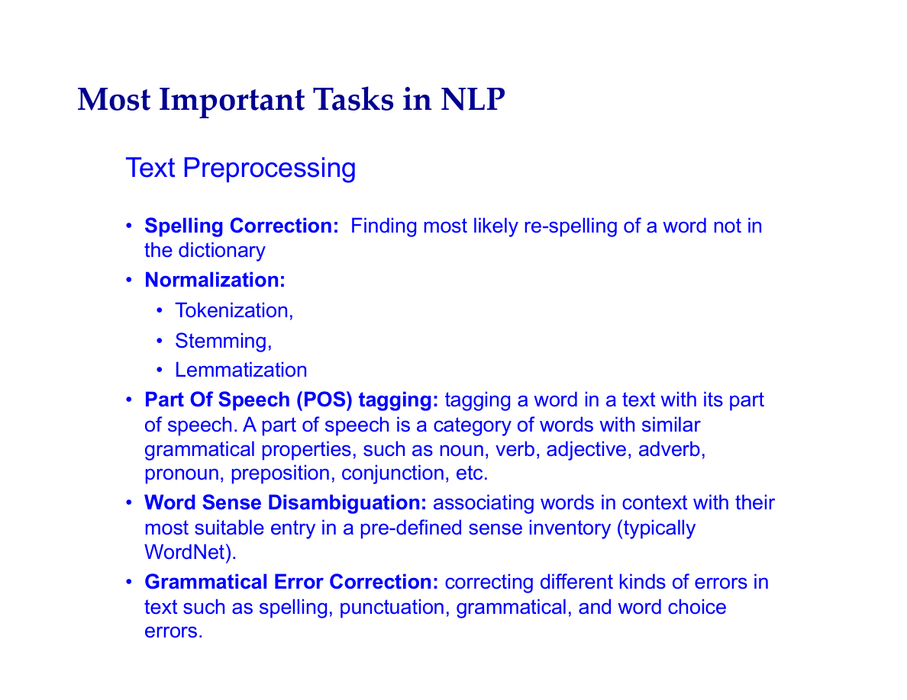
raw text→preprocess→classify / retrieve→generate / reason
4. 核心模型 / 算法
本讲的核心机制应结合逐步叙事和原始 slide 阅读。重点术语已用蓝色高亮；鼠标悬浮或键盘聚焦可查看中文解释。 Lecture 2, pp.2-26
5. 数学公式与模型机制
本讲以概念或流程图为主。若原 PDF 中的图示包含公式，需要结合原图人工检查。
6. 现实应用
搜索、客服、摘要、翻译、内容审核和多模态生成。 Lecture 2, pp.14-26
7. 本讲解决的问题与遗留问题
解决了什么
最后，课件逐步展开 text preprocessing、classification、information retrieval、knowledge graph、generation、QA、reasoning 和多模态任务，形成课程地图。
仍需注意
方法效果取决于数据、任务、评价指标和计算成本，需要结合后续 lecture 继续完善。
继续阅读
原图代表页：p.8, p.14, p.20。建议先核对结构图和公式页，再进入下一讲。
8. 复习重点
- 按“问题 - 方法 - 局限 - 改进”复述本讲。
- 能够解释蓝色术语，并定位对应 slide。
- 结合原始课件图像检查结构图、表格和公式。
9. 术语表
| Machine Learning | Machine Learning 让系统根据数据和经验改善任务性能，而不是完全依赖手工规则。 |
|---|---|
| Deep Learning | Deep Learning 使用多层 neural network 自动学习更复杂的表示。 |
| classification | classification 将输入分配到预定义类别，例如 spam detection 或 sentiment analysis。 |
10. 原始课件页面展示
以下页面由原始 PDF 渲染。点击图片可放大查看。
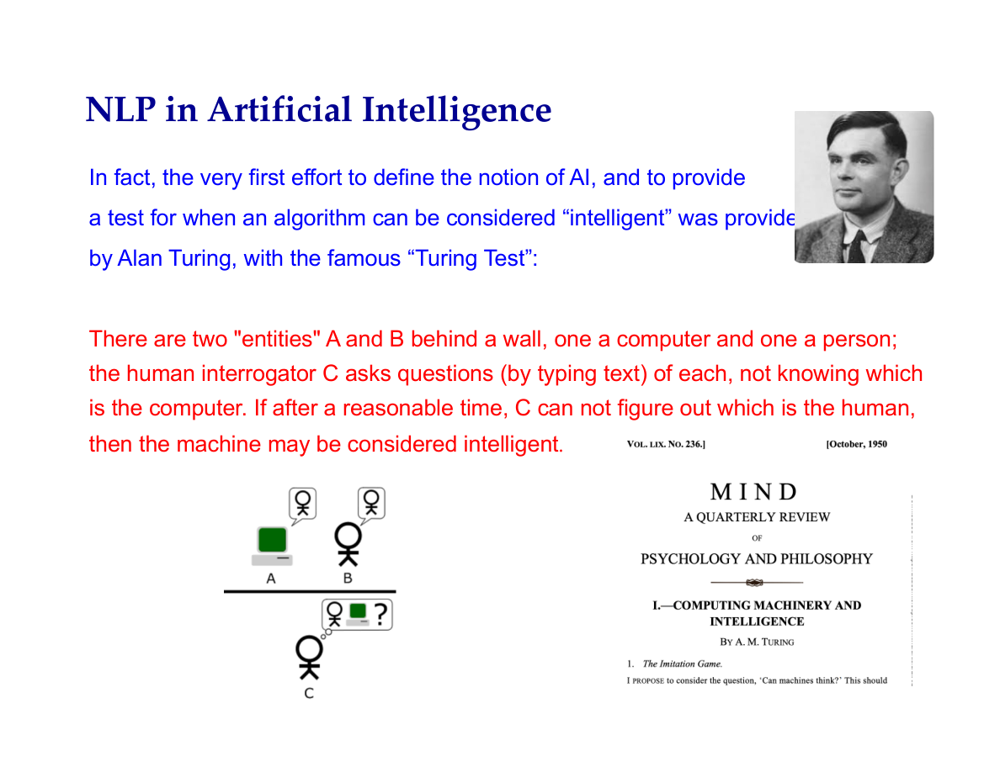
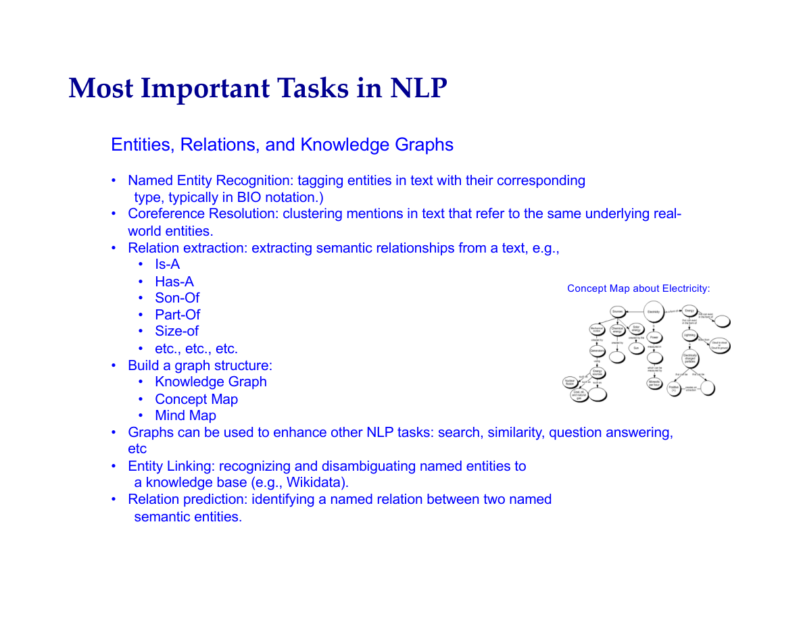
Lecture 03
Lecture 3: 基础概念与文本规范化 / Basic Notions and Text Normalization
源文件：Lecture 03 -- Basic Notions and Text Normalization.pdf。本文由原始 PDF 逐页提取生成，不读取 DOCX 笔记。
1. 本讲引入
Lecture 02 已经列出大量 NLP 任务，但模型不能直接消费一份网页、扫描文档或聊天记录。Lecture 03 因此后退一步，从 character、word、token、sentence、document 和 corpus 的层级开始。课件先比较 alphabet、syllabary 和 logography，再用 Unicode 统一这些符号系统。这个视角把“语言”转化为可以进入程序的数据结构。 Lecture 3, pp.2-6
新的问题是，现实文本几乎从来不是干净的 token 序列。数据可能来自 scraping、OCR、speech-to-text 或格式转换，还夹杂噪声和不规则写法。课件用数据准备流程图说明：在训练任何模型之前，必须先完成 cleaning、tokenization、normalization 和 segmentation。这个步骤看似底层，却会决定后续模型看到的世界。 Lecture 3, pp.7-11
2. 问题背景
最直觉的 tokenization 方法是按空格切分，但课件连续展示它为什么失败。按标点继续切分仍然会破坏 m.p.h.、Ph.D.、金额、日期、URL、hashtag 和 email。中文等语言甚至不稳定使用空格划分词边界。NLP 的第一个工程现实是：token 的定义并不是天然给定的。 Lecture 3, pp.12-18 image-based content; check original slide
课件随后比较 rule-based 方法和 sequence-to-sequence 方法。NLTK 的 regular expression 示例展示了规则如何为缩写、连字符、金额和省略号设置例外。SpaCy 则采用多阶段规则与 exception 组合。这里的重点不是背一条正则表达式，而是理解预处理器必须显式管理语言例外。 Lecture 3, pp.19-21
完成切词后，表面形式仍然需要收敛。normalization 统一大小写、缩写和拼写；stemming 用规则裁剪词缀；lemmatization 尝试恢复词典中的 lemma。sentence segmentation 还必须区分句点、缩写和小数点。搜索索引、RAG 入库和 corpus 构建都会直接受到这些决定影响。 Lecture 3, pp.22-26
3. 逐步叙事笔记
课件从书写系统和 Unicode 出发，把文本还原为 character 序列，再逐层组织为 word、token、sentence、document 与 corpus。 Lecture 3, pp.2-6
原始数据通常来自网页、扫描件或语音，不能直接交给模型。于是课程引入 cleaning、format conversion、tokenization 和 segmentation 管线。 Lecture 3, pp.7-11
简单按空格或标点切词很快失败：缩写、金额、URL、email、clitic、multiword expression 和中文词边界都需要更细致的规则或学习方法。 Lecture 3, pp.12-21 image-based content; check original slide
课件例子Lecture 3, p.17
例子：tokenization 不能只按空格切
课件用 URL、email、缩写和金额等例子说明 tokenization 的边界并不天然清楚。把 m.p.h.、Ph.D. 或网页地址粗暴按标点切开，会让下游模型看到错误 token。这个例子适合放在 preprocessing 附近，因为它直接解释了为什么 normalization、regular expression 和 exception list 是必要工程步骤。
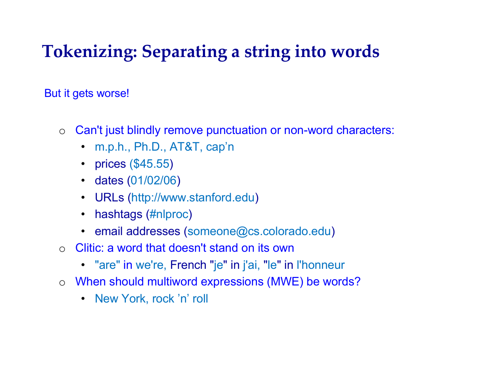
| 输入片段 | 天真切分风险 | 更合理的处理 |
|---|---|---|
| Ph.D. | 被切成多个无意义片段 | 作为缩写整体处理 |
| email / URL | 标点被误当分隔符 | 保留为结构化 token |
| 中文句子 | 没有显式空格 | 需要分词模型或规则 |
在切词之后，还要处理 normalization、stemming、lemmatization 和 sentence segmentation，才能形成稳定输入。 Lecture 3, pp.22-26
4. 核心模型 / 算法
本讲的核心机制应结合逐步叙事和原始 slide 阅读。重点术语已用蓝色高亮；鼠标悬浮或键盘聚焦可查看中文解释。 Lecture 3, pp.2-26
5. 数学公式与模型机制
本讲以概念或流程图为主。若原 PDF 中的图示包含公式，需要结合原图人工检查。
6. 现实应用
RAG 数据入库、搜索索引、社交媒体清洗和日志分析。 Lecture 3, pp.22-26
7. 本讲解决的问题与遗留问题
解决了什么
在切词之后，还要处理 normalization、stemming、lemmatization 和 sentence segmentation，才能形成稳定输入。
仍需注意
方法效果取决于数据、任务、评价指标和计算成本，需要结合后续 lecture 继续完善。
继续阅读
原图代表页：p.11, p.17, p.25。建议先核对结构图和公式页，再进入下一讲。
8. 复习重点
- 按“问题 - 方法 - 局限 - 改进”复述本讲。
- 能够解释蓝色术语，并定位对应 slide。
- 结合原始课件图像检查结构图、表格和公式。
9. 术语表
| tokenization | tokenization 将原始文本切分为模型可处理的 token。 |
|---|---|
| normalization | normalization 在文本处理中统一表面形式，在网络中也可用于稳定数值尺度。 |
| stemming | stemming 按规则裁剪词缀，得到近似词干。 |
| lemmatization | lemmatization 将词形变化映射回词典中的 lemma。 |
10. 原始课件页面展示
以下页面由原始 PDF 渲染。点击图片可放大查看。
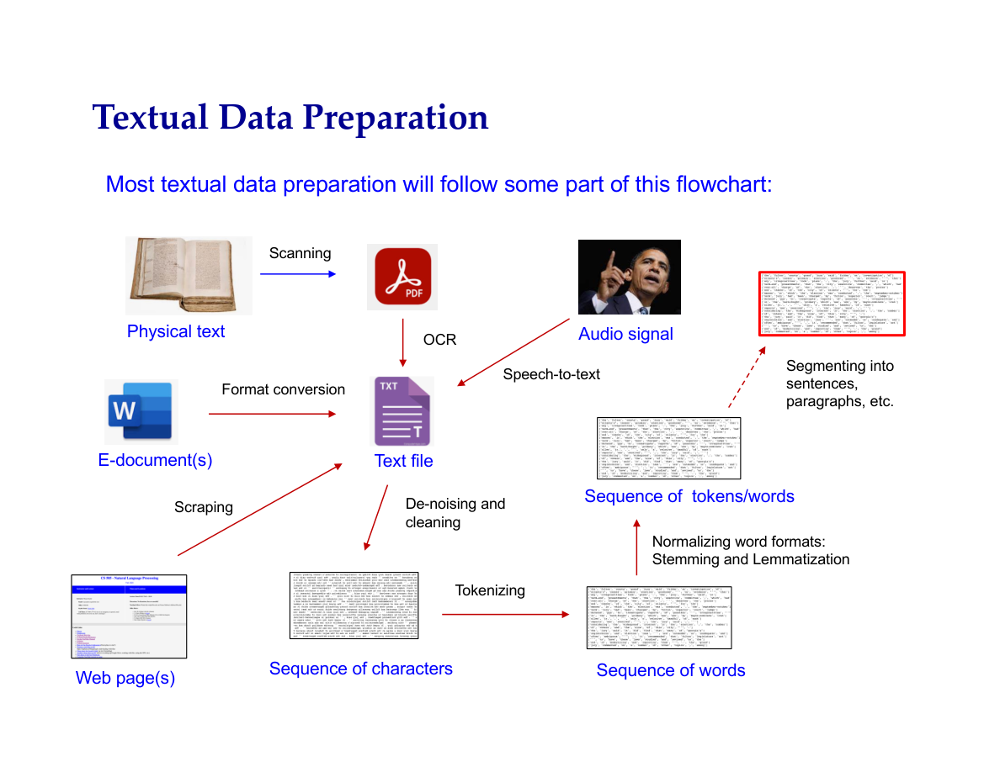
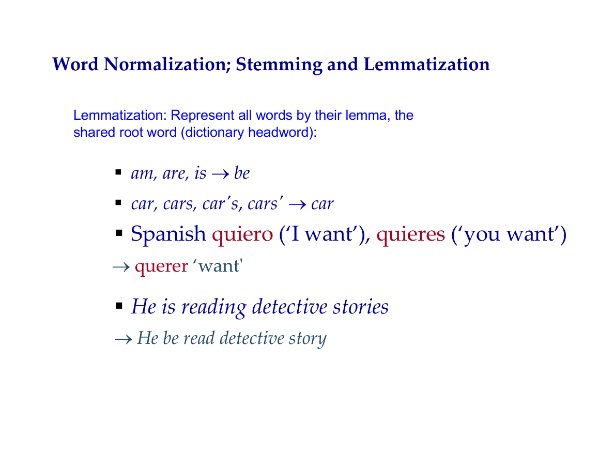
Lecture 05
Lecture 5: 语言模型、平滑与困惑度 / Language Models, Smoothing, Perplexity
源文件：Lecture 05 -- Language Models, Smoothing, Perplexity.pdf。本文由原始 PDF 逐页提取生成，不读取 DOCX 笔记。
1. 本讲引入
文本被整理为 token 序列后，一个自然问题出现了：系统怎样判断一句话是否像自然语言。Lecture 05 回到 n-gram language model，用局部上下文估计下一个 token。课件从加入 <s> 与 </s> 边界标记开始，再逐步采样 bigram、trigram 或更高阶组合。language model 在这里不只是生成器，更是序列概率分布。 Lecture 5, pp.2-10
只有生成例子还不够，学生需要回答模型 A 是否优于模型 B。真实部署中的 extrinsic evaluation 最可靠，却可能耗时、昂贵甚至不可执行。课件因此引入 train/test split 和 intrinsic evaluation。perplexity 成为连接概率模型与可比较指标的关键工具。 Lecture 5, pp.11-14
2. 问题背景
直接比较句子联合概率会遇到长度偏差。课件用 “a red fox” 的例子说明，每多乘一个小于 1 的概率，整体概率就会继续下降。长句不应该因为长度本身而自动变差，因此必须使用 geometric mean 做归一化。课件进一步转入 log space，以避免极小概率造成 underflow。 Lecture 5, pp.15-21 image-based content; check original slide
perplexity 解决了评价问题，却没有解决泛化问题。高阶 n-gram 可以生成更像 Shakespeare 的局部片段，但训练 corpus 中只覆盖极少数组合。课件用 Shakespeare bigram 数量说明绝大多数可能组合从未出现。模型越依赖精确上下文，越容易 overfit。 Lecture 5, pp.25-30
零概率是最直接的失败形式。测试集中只要出现一个未见 bigram，整句概率就变成 0，perplexity 也失去意义。于是课件引入 smoothing、Add-one estimation、backoff 和 interpolation。输入法联想、拼写纠正和早期 ASR 都需要面对同样的未知事件问题。 Lecture 5, pp.31-37
3. 逐步叙事笔记
课程先用 n-gram language model 逐步生成句子：根据已有上下文采样下一个 token，并把有限 corpus 看作无限语言空间的近似样本。 Lecture 5, pp.2-10
真实系统需要评价模型。extrinsic evaluation 接近业务但昂贵，因此开发阶段常使用 train/test split 做 intrinsic evaluation。 Lecture 5, pp.11-13
联合概率会随句长持续变小，因此课件引入长度归一化的 perplexity，并强调 log space 可以避免 underflow。 Lecture 5, pp.14-27 image-based content; check original slide
课件例子Lecture 5, p.25
例子：perplexity 为什么要做长度归一化
课件用短语概率连乘说明：句子越长，联合概率通常越小，但这不代表长句一定更差。perplexity 用几何平均把长度影响拿掉，让不同长度的测试文本可以比较。这个例子直接连接 language model evaluation，也是后面 smoothing 之前必须理解的评价基线。
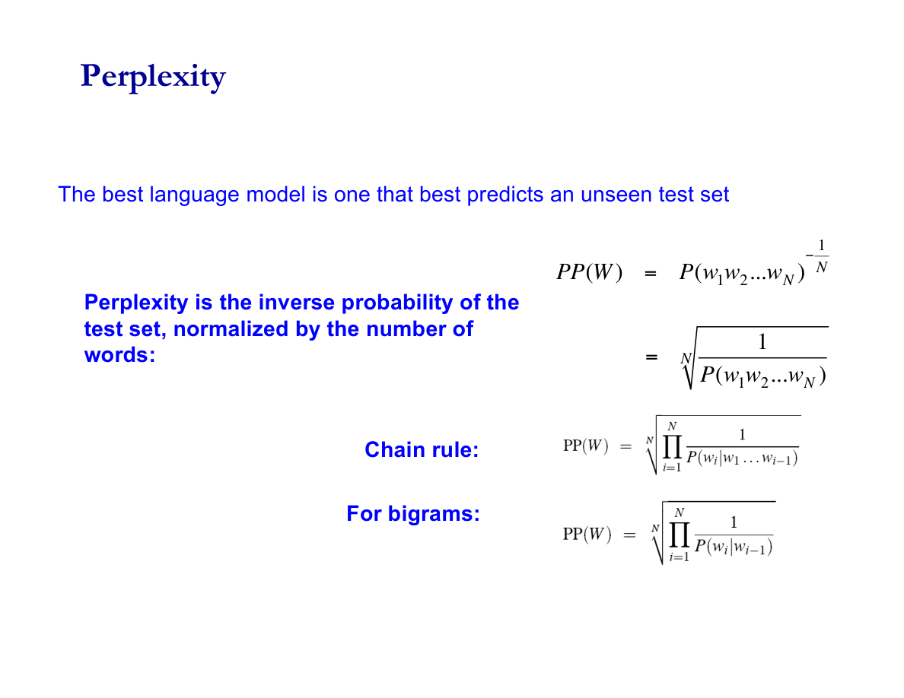
Python example: perplexity
import math
probs = [0.20, 0.10, 0.25, 0.05]
log_prob = sum(math.log(p) for p in probs)
perplexity = math.exp(-log_prob / len(probs))
print(round(perplexity, 3))解释： 这段代码把 token probability 转成平均负 log probability，再指数化得到 perplexity；概率越低，perplexity 越高。
更高阶 n-gram 更像 Shakespeare，却也更容易 overfit。大量未见组合造成零概率，于是 smoothing、Add-one、backoff 与 interpolation 出现。 Lecture 5, pp.28-37
4. 核心模型 / 算法
本讲的核心机制应结合逐步叙事和原始 slide 阅读。重点术语已用蓝色高亮；鼠标悬浮或键盘聚焦可查看中文解释。 Lecture 5, pp.2-37
5. 数学公式与模型机制
\[\operatorname{PP}(W)=P(w_1\ldots w_N)^{-1/N}\]
perplexity 对测试集概率做长度归一化，越低通常越好。 Lecture 5, p.25
6. 现实应用
输入法联想、拼写纠正、早期 ASR 与 language model 评估。 Lecture 5, pp.28-37
7. 本讲解决的问题与遗留问题
解决了什么
更高阶 n-gram 更像 Shakespeare，却也更容易 overfit。大量未见组合造成零概率，于是 smoothing、Add-one、backoff 与 interpolation 出现。
仍需注意
方法效果取决于数据、任务、评价指标和计算成本，需要结合后续 lecture 继续完善。
继续阅读
原图代表页：p.18, p.25, p.33。建议先核对结构图和公式页，再进入下一讲。
8. 复习重点
- 按“问题 - 方法 - 局限 - 改进”复述本讲。
- 能够解释蓝色术语，并定位对应 slide。
- 结合原始课件图像检查结构图、表格和公式。
9. 术语表
| language model | language model 为 token 序列分配概率，并可预测下一个 token。 |
|---|---|
| perplexity | perplexity 衡量 language model 对测试文本的不确定性，通常越低越好。 |
10. 原始课件页面展示
以下页面由原始 PDF 渲染。点击图片可放大查看。
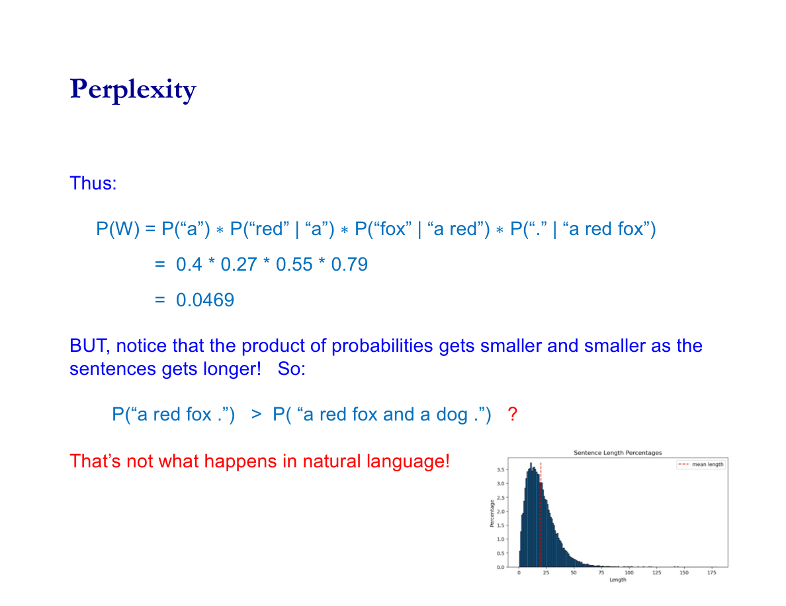
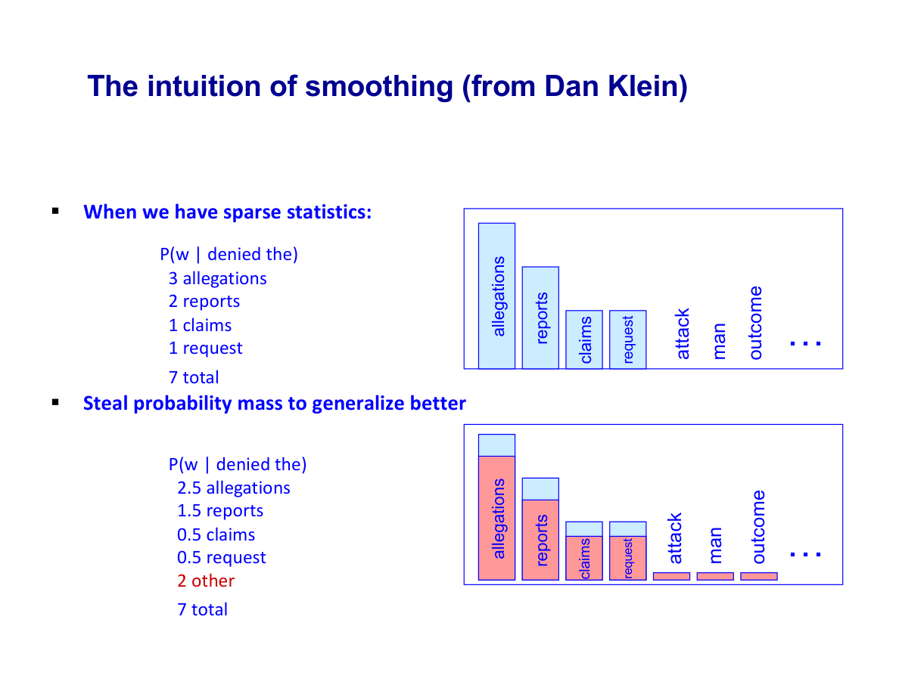
Lecture 06
Lecture 6: 平滑与词项向量模型 / Smoothing and Term Vector Models
源文件：Lecture 06 -- Introduction to Term Vector Models.pdf。本文由原始 PDF 逐页提取生成，不读取 DOCX 笔记。
1. 本讲引入
上一讲已经看到，未见 n-gram 会让 language model 把整句概率压到 0。Lecture 06 先继续处理这个遗留问题。课件用 denied the offer 的例子说明，训练数据没有出现某个组合，不等于它在语言中不可能出现。smoothing 的任务是从已见事件中重新分配少量概率质量。 Lecture 6, pp.2-8
当生成问题暂时告一段落，课程转向另一类任务：怎样比较两篇文本。bag-of-words（BOW）把文档映射为 vocabulary 上的 term frequency vector。随后，TF-IDF 进一步降低常见词的影响，提高稀有词的权重。课程由概率序列模型切换到 vector space model。 Lecture 6, pp.9-17
2. 问题背景
Add-one smoothing 简单地给每个候选词计数加 1，但它会过度移动概率质量。backoff 在高阶上下文证据不足时退回更短上下文，interpolation 则混合不同阶概率。课件强调，这些方法都在回答同一个问题：有限样本怎样近似开放语言。更高级的方法如 Kneser-Ney 会在后续阅读中继续出现。 Lecture 6, pp.4-8
BOW 的新问题是，raw term frequency 并不等于信息价值。课件比较 rare term 和 frequent term：一个罕见词往往比 the、under 之类常见词更能定位文档。IDF 用 document frequency 衡量词项在 corpus 中的稀有程度。TF-IDF 因此成为信息检索中的经典基线。 Lecture 6, pp.10-16
文档进入向量空间后，还需要定义接近程度。Euclidean distance 会受到文档长度影响：把同一篇文档复制一遍，语义没有变化，但距离会增加。课件改用 angle 和 cosine similarity 比较方向。搜索、去重和相似案例检索今天仍然使用这套直觉。 Lecture 6, pp.17-22
3. 逐步叙事笔记
上一讲留下零概率问题。本讲先比较 Add-one smoothing、backoff 和 interpolation：核心是把部分概率质量留给未见事件。 Lecture 6, pp.2-8
随后任务从生成转向比较文档。bag-of-words 用 vocabulary 上的 term frequency 表示文本；TF-IDF 再提高稀有词的区分度。 Lecture 6, pp.9-16
文档成为高维向量后，Euclidean distance 会受到长度影响。课件改用 cosine similarity 比较方向，从而更贴近语义比例。 Lecture 6, pp.17-22
课件例子Lecture 6, p.21
例子：cosine similarity 比较的是方向
课件在 vector space model 中把 document 和 query 都表示成 term vector。cosine similarity 不直接比较长度，而是比较向量夹角，因此更适合判断两段文本是否谈论相似主题。这个例子解释了为什么 BOW / TF-IDF 虽然简单，却仍然能支撑搜索和相似文档检索。
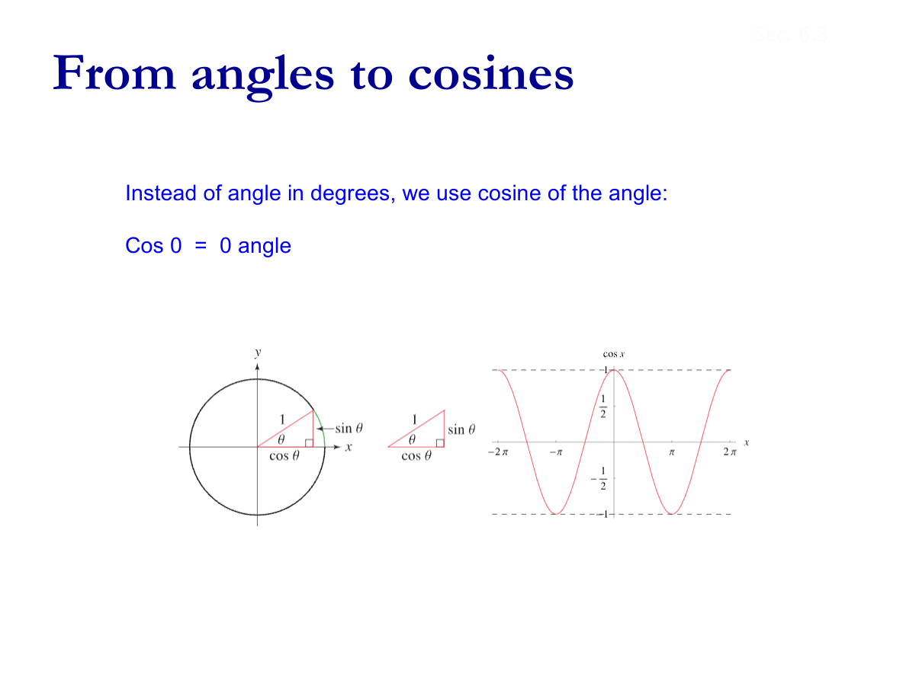
querydocumentangle ↓ means similarity ↑
最后，课件展示 vector space model 如何用于作品、词项和 query 比较，为后续 embedding 铺路。 Lecture 6, pp.23-27 image-based content; check original slide
4. 核心模型 / 算法
本讲的核心机制应结合逐步叙事和原始 slide 阅读。重点术语已用蓝色高亮；鼠标悬浮或键盘聚焦可查看中文解释。 Lecture 6, pp.2-27
5. 数学公式与模型机制
\[P_{\mathrm{Add\text{-}1}}(w_i\mid w_{i-1})=\frac{c(w_{i-1},w_i)+1}{c(w_{i-1})+V}\]
Add-one smoothing 为未见 bigram 留出概率质量。 Lecture 6, p.5
\[\cos(q,d)=\frac{q\cdot d}{\lVert q\rVert\lVert d\rVert}\]
cosine similarity 比较向量方向。 Lecture 6, p.21
6. 现实应用
轻量搜索、文档去重、相似案例检索和可解释推荐。 Lecture 6, pp.23-27
7. 本讲解决的问题与遗留问题
解决了什么
最后，课件展示 vector space model 如何用于作品、词项和 query 比较，为后续 embedding 铺路。
仍需注意
方法效果取决于数据、任务、评价指标和计算成本，需要结合后续 lecture 继续完善。
继续阅读
原图代表页：p.5, p.15, p.21。建议先核对结构图和公式页，再进入下一讲。
8. 复习重点
- 按“问题 - 方法 - 局限 - 改进”复述本讲。
- 能够解释蓝色术语，并定位对应 slide。
- 结合原始课件图像检查结构图、表格和公式。
9. 术语表
| embedding | embedding 将离散对象映射为连续向量，使相似对象在空间中更接近。 |
|---|---|
| TF-IDF | TF-IDF 根据文档内词频和跨文档稀有程度为词项加权。 |
| bag-of-words | bag-of-words 忽略词序，用 vocabulary 上的词频向量表示文本。 |
| cosine similarity | cosine similarity 使用向量夹角衡量方向相似程度。 |
10. 原始课件页面展示
以下页面由原始 PDF 渲染。点击图片可放大查看。
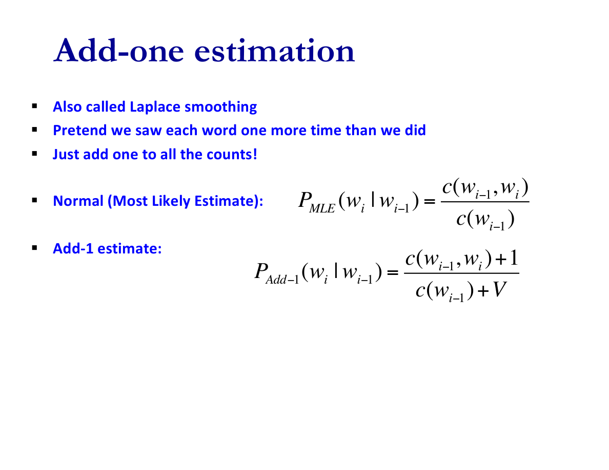
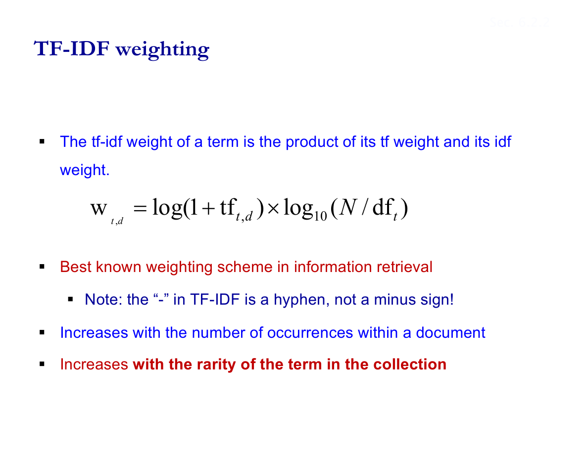
Lecture 07
Lecture 7: 向量模型、PCA 与词嵌入 / Vector Models and Embeddings
源文件：Lecture 07 -- Vector Models, Word and Text Embeddings.pdf。本文由原始 PDF 逐页提取生成，不读取 DOCX 笔记。
1. 本讲引入
Lecture 06 已经把文本表示成 TF-IDF vector，但 vocabulary 可能有上万维。Lecture 07 先处理可解释性问题：高维空间无法直接观察。课件使用 PCA 和 SVD 找到主要变化方向，再把人物文本向量投影到二维。降维不是为了替代原表示，而是为了看清数据结构。 Lecture 7, pp.2-8 image-based content; check original slide
可视化之后，更深的问题暴露出来。term-frequency vector 很长、稀疏，而且 car 与 automobile 在坐标轴上彼此独立。统计共现不等于语义，但上下文又是学习语义的重要线索。课程由显式计数走向 distributional semantics 和 embedding。 Lecture 7, pp.14-18
2. 问题背景
课件展示不同 preprocessing 选择如何改变 PCA 图：是否删除 stop words、是否使用 TF-IDF，都会影响人物位置。这个例子说明，vector space 并不是中性的镜子。表示方式决定模型能看到哪些关系。传统 BOW 在规模、泛化和语义表达上都有明显限制。 Lecture 7, pp.9-15 image-based content; check original slide
distributional semantics 提出一个实用假设：词的意义可以从它附近出现的词推断。课件用 ongchoi、spinach、chard 和 collard greens 的上下文说明，即使不知道新词定义，也能从邻近词猜测语义类别。word2vec 将这种直觉变为训练目标。模型通过正负共现样本逐步移动 word embedding。 Lecture 7, pp.18-21
embedding 不只用于近邻搜索。课件展示 tree - apple + grape 的向量类比，也展示历史语料中的语义漂移。现实中的语义搜索、推荐和 RAG retrieval 都依赖稠密向量。后续课程会继续讨论怎样让表示进入 Machine Learning 模型。 Lecture 7, pp.22-25 image-based content; check original slide
3. 逐步叙事笔记
高维稀疏 TF-IDF 向量虽然可计算，但难以观察。PCA 通过 SVD 找到主要变化方向，用低维投影帮助理解数据。 Lecture 7, pp.2-8 image-based content; check original slide
不同预处理方式会改变向量空间。更关键的是，term-frequency vector 过长、稀疏，也无法自然表达 synonym 和 polysemy。 Lecture 7, pp.9-15 image-based content; check original slide
解决思路是短而稠密的 embedding。distributional semantics 用上下文定义意义，word2vec 则通过共现关系训练词向量。 Lecture 7, pp.16-21
课件例子Lecture 7, p.18
例子：从上下文猜新词含义
课件用 ongchoi、spinach、chard 和 collard greens 一类例子说明 distributional semantics：一个词经常和哪些词共同出现，会暴露它的大致语义位置。word embedding 不是直接背词典定义，而是在共现关系中学习 dense vector。这个例子应该贴在 embedding 小节附近，因为它说明了从 BOW 走向 word2vec 的核心动机。
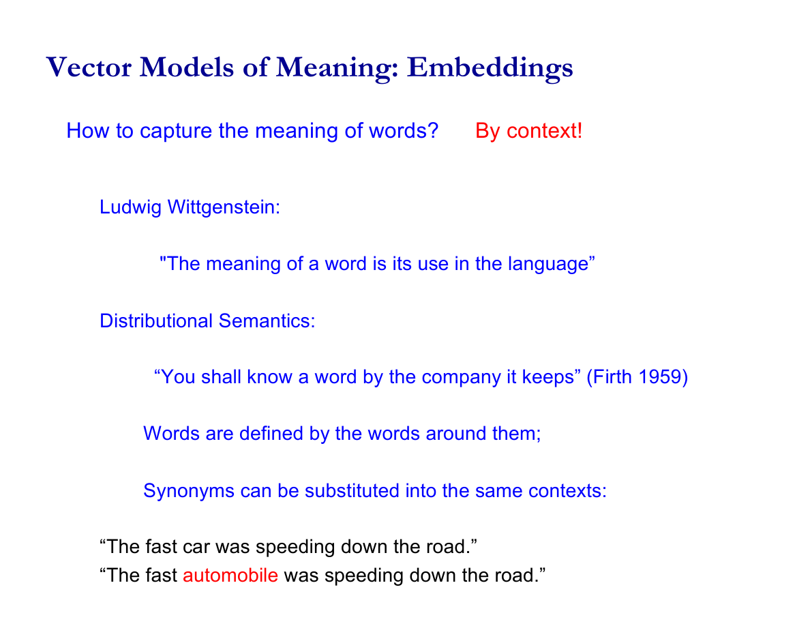
| 词 | 附近上下文 | 模型可推断的信息 |
|---|---|---|
| ongchoi | vegetable, cook, greens | 可能是蔬菜类词 |
| spinach | leafy, salad, cook | 与 greens 语义接近 |
| grape | fruit, vine, juice | 与 tree/apple 类比有关 |
embedding 支持向量类比、语义变化研究和 document embedding，成为现代语义检索的重要基础。 Lecture 7, pp.22-25 image-based content; check original slide
4. 核心模型 / 算法
本讲的核心机制应结合逐步叙事和原始 slide 阅读。重点术语已用蓝色高亮；鼠标悬浮或键盘聚焦可查看中文解释。 Lecture 7, pp.2-25
5. 数学公式与模型机制
本讲以概念或流程图为主。若原 PDF 中的图示包含公式，需要结合原图人工检查。
6. 现实应用
语义搜索、向量数据库、推荐系统和 RAG retrieval。 Lecture 7, pp.22-25
7. 本讲解决的问题与遗留问题
解决了什么
embedding 支持向量类比、语义变化研究和 document embedding，成为现代语义检索的重要基础。
仍需注意
方法效果取决于数据、任务、评价指标和计算成本，需要结合后续 lecture 继续完善。
继续阅读
原图代表页：p.7, p.18, p.22。建议先核对结构图和公式页，再进入下一讲。
8. 复习重点
- 按“问题 - 方法 - 局限 - 改进”复述本讲。
- 能够解释蓝色术语，并定位对应 slide。
- 结合原始课件图像检查结构图、表格和公式。
9. 术语表
| embedding | embedding 将离散对象映射为连续向量，使相似对象在空间中更接近。 |
|---|---|
| TF-IDF | TF-IDF 根据文档内词频和跨文档稀有程度为词项加权。 |
| word2vec | word2vec 根据上下文共现关系学习 word embedding。 |
10. 原始课件页面展示
以下页面由原始 PDF 渲染。点击图片可放大查看。
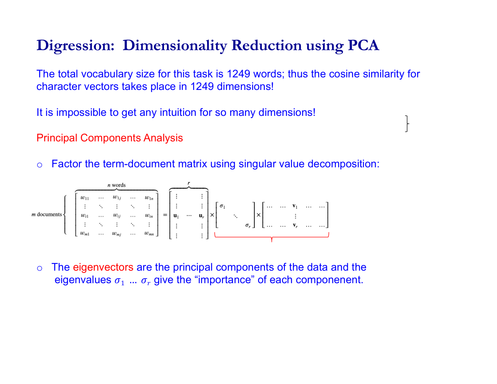
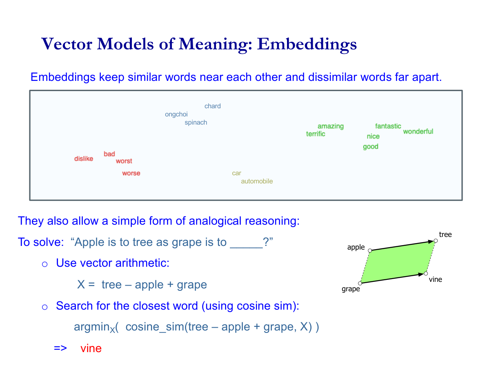
Lecture 08
Lecture 8: 机器学习与文档聚类 / ML and Document Clustering
源文件：Lecture 08 -- Intro to ML, Document Clustering.pdf。本文由原始 PDF 逐页提取生成，不读取 DOCX 笔记。
1. 本讲引入
有了 vector representation，课程可以开始讨论 Machine Learning。Lecture 08 先区分传统编程和 learning system：前者由人写规则，后者根据经验数据改善性能。课件用数据准备、参数、算法和结果之间的关系图拆解训练流程。这个转折把 NLP 从手工规则推进到 data-driven learning。 Lecture 8, pp.4-14 image-based content; check original slide
但很多 corpus 没有现成标签。新闻文章、客户反馈和文档集合往往先需要探索，而不是立即分类。clustering 因此成为第一个 unsupervised learning 任务。它尝试发现数据对象之间的自然分组。 Lecture 8, pp.15-20
2. 问题背景
clustering 的核心困难是，cluster 本身没有唯一正确定义。课件用空间分布图说明，同一批点可以被不同方式切分。相似性度量、cluster 形状和业务目标都会改变结果。无监督学习不是自动得到真相，而是提供结构假设。 Lecture 8, pp.16-20
K-Means 做出一个强假设：提前指定 K。Lloyd's algorithm 随机选择 centroid，再反复执行样本分配和均值更新。课件通过 cost 曲线引出 elbow method，帮助学生理解 K 的选择。这个方法直观、快速，却依赖初始化。 Lecture 8, pp.21-28 image-based content; check original slide
不同大小、密度、非球形 cluster 和 outlier 会破坏 K-Means。课件连续展示失败图示，再介绍重复初始化、K-Means++ 和 hierarchical clustering。文档主题探索、知识库清理和标注准备都可能使用这些工具。下一步课程将进入带标签的 supervised learning。 Lecture 8, pp.29-39 image-based content; check original slide
3. 逐步叙事笔记
课件先区分传统编程与 Machine Learning：算法从经验数据中调整参数，而不是完全依赖手工规则。 Lecture 8, pp.4-14 image-based content; check original slide
没有标签时，clustering 试图把相近对象放入同一组。但“什么算一个 cluster”本身就存在歧义。 Lecture 8, pp.15-20
K-Means 先指定 K，再反复分配最近 centroid 和重算均值。elbow method 用于帮助选择 K，但不是绝对答案。 Lecture 8, pp.21-28 image-based content; check original slide
课件例子Lecture 8, p.24
例子：K-Means 如何移动 centroid
课件用 K-Means 图示展示 Lloyd's algorithm：先给出 K 个 centroid，再把点分配给最近 centroid，最后重新计算每组均值。这个例子解释了 clustering 为什么是迭代过程，而不是一次性贴标签。它也提示学生注意，初始 centroid 和 K 的选择会影响结果。
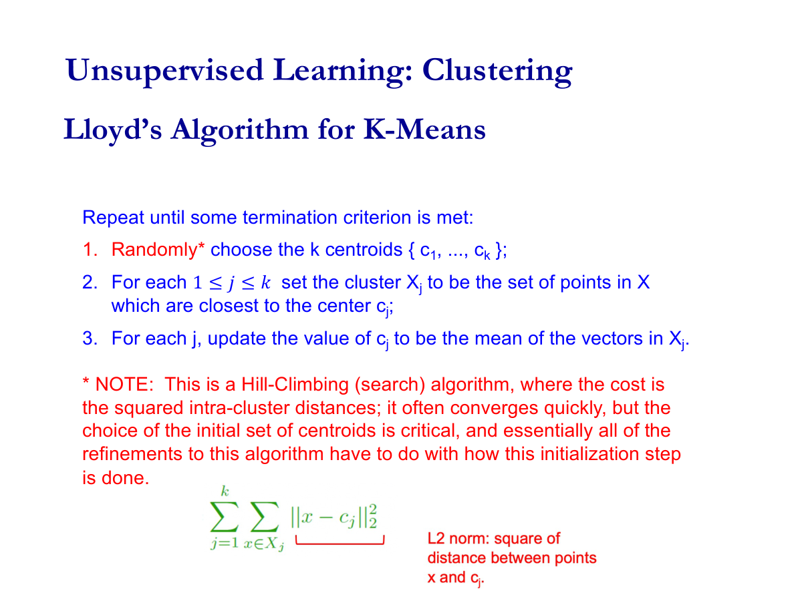
Cassign → update centroid → repeat
不同大小、密度、形状和 outlier 会让 K-Means 失败。初始化改进和 hierarchical clustering 提供补充视角。 Lecture 8, pp.29-39 image-based content; check original slide
4. 核心模型 / 算法
本讲的核心机制应结合逐步叙事和原始 slide 阅读。重点术语已用蓝色高亮；鼠标悬浮或键盘聚焦可查看中文解释。 Lecture 8, pp.4-39
5. 数学公式与模型机制
\[\min \sum_j\sum_{x\in C_j}\lVert x-c_j\rVert_2^2\]
K-Means 通过反复更新 centroid 降低 cluster 内距离。 Lecture 8, p.24
6. 现实应用
主题探索、客户反馈归类、知识库整理和数据标注准备。 Lecture 8, pp.29-39
7. 本讲解决的问题与遗留问题
解决了什么
不同大小、密度、形状和 outlier 会让 K-Means 失败。初始化改进和 hierarchical clustering 提供补充视角。
仍需注意
方法效果取决于数据、任务、评价指标和计算成本，需要结合后续 lecture 继续完善。
继续阅读
原图代表页：p.21, p.24, p.31。建议先核对结构图和公式页，再进入下一讲。
8. 复习重点
- 按“问题 - 方法 - 局限 - 改进”复述本讲。
- 能够解释蓝色术语，并定位对应 slide。
- 结合原始课件图像检查结构图、表格和公式。
9. 术语表
| Machine Learning | Machine Learning 让系统根据数据和经验改善任务性能，而不是完全依赖手工规则。 |
|---|
10. 原始课件页面展示
以下页面由原始 PDF 渲染。点击图片可放大查看。
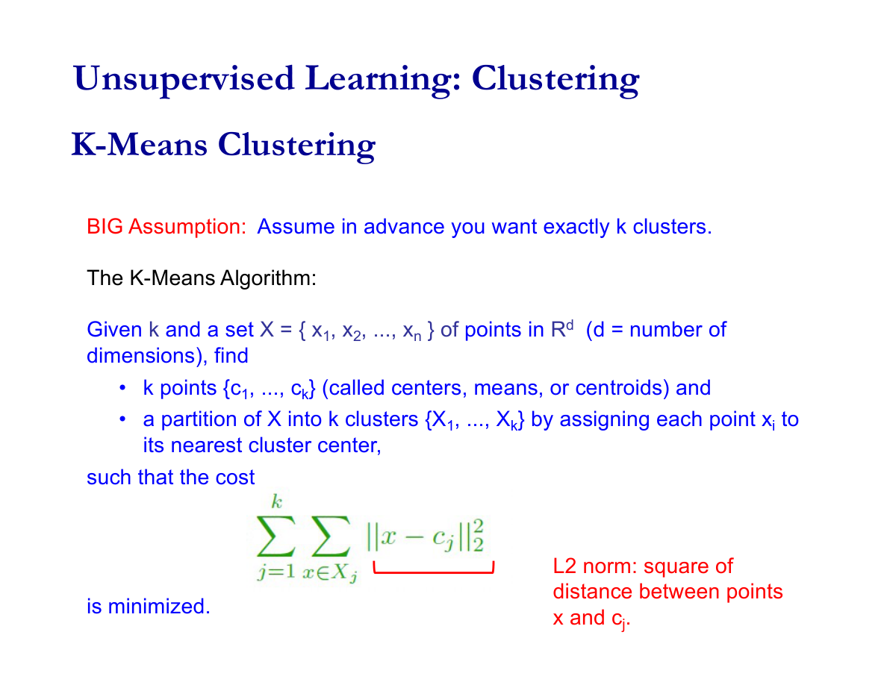
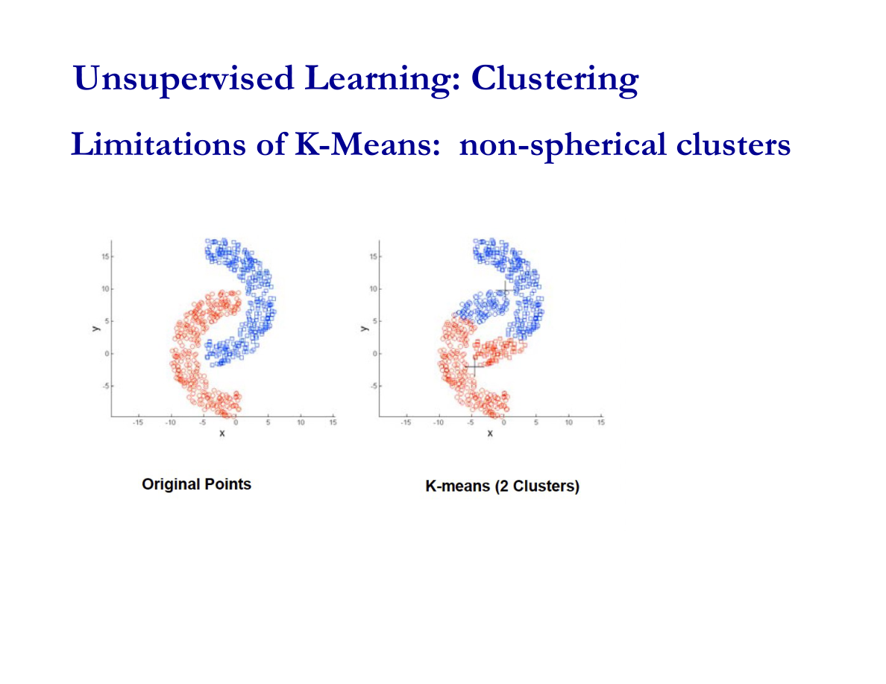
Lecture 09
Lecture 9: 监督学习前奏 / Regression and Gradient Descent
源文件：Lecture 09 --Prelude to Supervised Learning.pdf。本文由原始 PDF 逐页提取生成，不读取 DOCX 笔记。
1. 本讲引入
Lecture 08 在没有标签时寻找 cluster。Lecture 09 转向另一种条件：如果训练样本已经带有目标值，模型怎样学会预测。课件先从 linear regression 开始，因为它把参数、预测和误差关系展示得最清楚。这个铺垫为 classification 和 neural network 优化建立数学语言。 Lecture 9, pp.2-9
当输出不再是连续数值，而是类别，线性输出需要转换。logistic regression 使用 sigmoid 把 logit 映射到 0 到 1。模型可以把结果解释为概率，再用 threshold 做决策。课程由回归自然过渡到 supervised classification。 Lecture 9, pp.10-18
2. 问题背景
训练的核心是最小化 loss function。简单模型可能有解析解，但复杂模型通常只能迭代寻找较好参数。gradient descent 计算当前方向上的 slope，再沿负梯度更新。learning rate 太大可能震荡，太小则训练缓慢。 Lecture 9, pp.19-27 image-based content; check original slide
课件的图示让优化过程变得可观察：参数位于 loss surface 上，训练目标是逐步接近低点。学习率决定每一步走多远，因此它既影响收敛速度，也影响训练能否稳定。这个直觉会在 neural network、RNN 和 Transformer 中反复出现。即使模型结构变化，backpropagation 和 gradient-based optimization 仍是共同基础。 Lecture 9, pp.28-34
在 NLP 中，输入通常是 document feature vector，输出是有限类别集合。垃圾邮件、工单路由和 sentiment analysis 都属于这一模式。问题不只是得到一个预测，还要评估模型是否能泛化到未见文本。下一讲会系统讨论 classifier 和评价指标。 Lecture 9, pp.30-36
3. 逐步叙事笔记
进入 supervised learning 前，课件先用 linear regression 说明：模型需要参数、预测函数和可量化误差。 Lecture 9, pp.2-9
当目标变成分类，logistic regression 用 sigmoid 把线性输出映射为概率。threshold 再把概率变成类别决策。 Lecture 9, pp.10-18
解析解并不总是可得，因此 gradient descent 反复沿负梯度方向更新参数。learning rate 决定每一步幅度。 Lecture 9, pp.19-29 image-based content; check original slide
课件例子Lecture 9, p.24
例子：gradient descent 是沿着 loss 往低处走
课件用 loss surface 说明参数更新的方向。gradient 给出当前位置上升最快的方向，所以 gradient descent 沿负梯度更新参数。learning rate 决定每一步走多远：太小训练慢，太大可能在谷底附近来回跳。
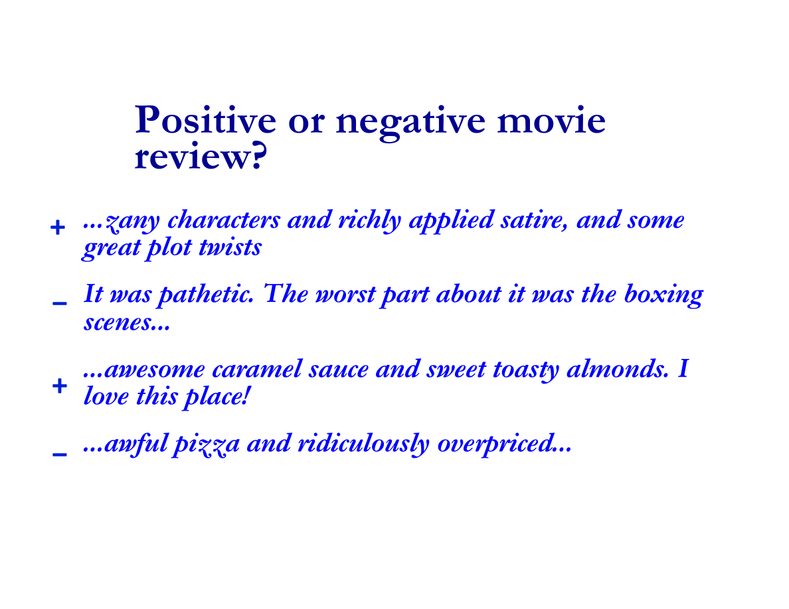
Python example: gradient descent
theta = 3.0
learning_rate = 0.1
for _ in range(5):
gradient = 2 * theta # loss = theta ** 2
theta -= learning_rate * gradient
print(round(theta, 3))解释： 这里用最简单的 loss = theta ** 2 演示参数更新。真实模型更复杂，但“按负梯度方向更新”的思想相同。
最后，课程把这些工具连接回文本分类：文档表示、标签、训练样本和评价指标共同构成 supervised classifier。 Lecture 9, pp.30-36
4. 核心模型 / 算法
本讲的核心机制应结合逐步叙事和原始 slide 阅读。重点术语已用蓝色高亮；鼠标悬浮或键盘聚焦可查看中文解释。 Lecture 9, pp.2-36
5. 数学公式与模型机制
\[\sigma(z)=\frac{1}{1+e^{-z}}\]
sigmoid 将线性输出映射为概率。 Lecture 9, p.15
\[\theta\leftarrow\theta-\eta\nabla_\theta L(\theta)\]
gradient descent 沿负梯度方向更新参数。 Lecture 9, p.24
6. 现实应用
文本分类基线、风险预测和深度学习优化。 Lecture 9, pp.30-36
7. 本讲解决的问题与遗留问题
解决了什么
最后，课程把这些工具连接回文本分类：文档表示、标签、训练样本和评价指标共同构成 supervised classifier。
仍需注意
方法效果取决于数据、任务、评价指标和计算成本，需要结合后续 lecture 继续完善。
继续阅读
原图代表页：p.15, p.24, p.32。建议先核对结构图和公式页，再进入下一讲。
8. 复习重点
- 按“问题 - 方法 - 局限 - 改进”复述本讲。
- 能够解释蓝色术语，并定位对应 slide。
- 结合原始课件图像检查结构图、表格和公式。
9. 术语表
| supervised learning | supervised learning 使用带标签样本学习输入到目标输出之间的映射。 |
|---|---|
| gradient descent | gradient descent 沿 loss function 的负梯度方向更新模型参数。 |
10. 原始课件页面展示
以下页面由原始 PDF 渲染。点击图片可放大查看。
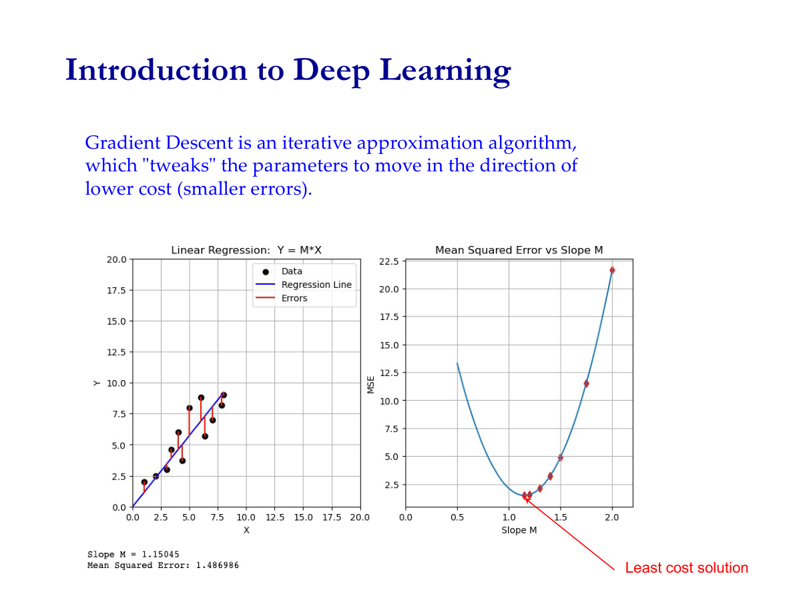
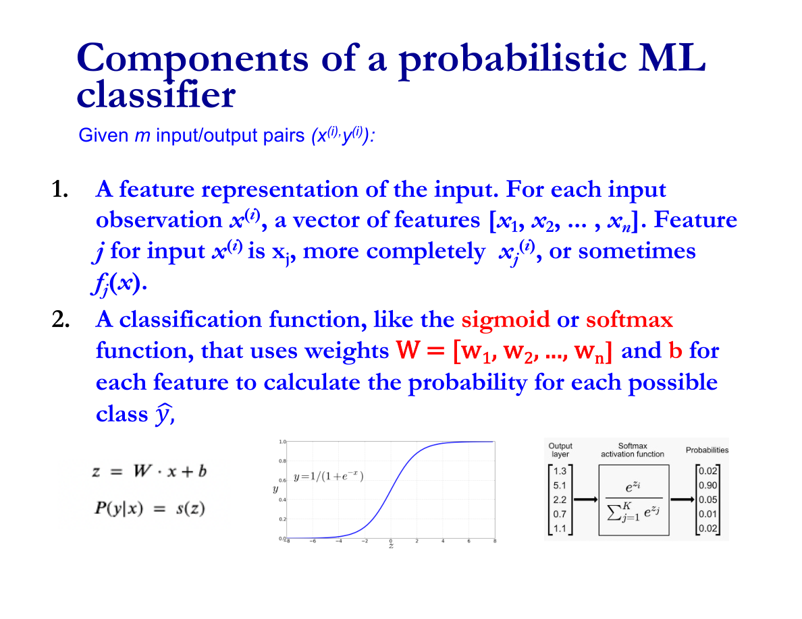
Lecture 10
Lecture 10: 监督学习与神经网络 / Supervised ML and Neural Networks
源文件：Lecture 10 -- Supervised ML.pdf。本文由原始 PDF 逐页提取生成，不读取 DOCX 笔记。
1. 本讲引入
前一讲已经用 regression 和 gradient descent 建立 supervised learning 的基本语言。Lecture 10 将这些工具放回文本任务：给定带标签文档，系统怎样学习 classification 规则。早期 NLP 依赖人工 keyword 和 rule-based pipeline，但规则难以覆盖语言变化。data-driven classifier 试图从 labeled data 中自动估计模式。 Lecture 10, pp.2-10
有预测还不够，必须知道系统在哪些错误上失败。课件区分 accuracy、precision、recall、F1 和 confusion matrix。类别不平衡时，一个看似很高的 accuracy 可能毫无价值。评价指标因此不是报告末尾的装饰，而是模型设计的一部分。 Lecture 10, pp.11-18 image-based content; check original slide
2. 问题背景
文本分类首先需要 feature vector。BOW、TF-IDF 或其他表示将文档转换为模型输入；标签提供监督信号。Naive Bayes 用条件概率做出简洁假设，logistic regression 学习线性决策边界。它们适合作为可解释基线，但对复杂语义关系的表达有限。 Lecture 10, pp.2-10
课件通过 confusion matrix 说明错误类型不能混为一谈。spam filter 漏掉危险邮件和误杀正常邮件的业务成本不同。precision 关注预测为正的样本中有多少正确，recall 关注真实正例中有多少被找回。F1 在两者之间提供平衡。 Lecture 10, pp.11-18 image-based content; check original slide
当 feature engineering 无法覆盖复杂模式时，neural network 提供新的表示能力。多层权重、activation function 和 backpropagation 让模型学习非线性边界。这个转折也带来新的风险：参数更多，过拟合和调参更困难。Lecture 11 将继续讨论 generalization。 Lecture 10, pp.19-25
3. 逐步叙事笔记
课件从文本分类任务出发，比较 rule-based、Naive Bayes 和 probabilistic classifier。核心问题是怎样从标注数据学习决策规则。 Lecture 10, pp.2-10
为了评价系统，课件区分 accuracy、precision、recall、F1 与 confusion matrix。类别不平衡时，只看 accuracy 会误导判断。 Lecture 10, pp.11-18 image-based content; check original slide
课件例子Lecture 10, p.16
例子：confusion matrix 解释分类器错在哪里
课件在评估部分区分 accuracy、precision、recall 和 F1。以 spam detection 为例，漏掉垃圾邮件和误杀正常邮件的成本不同，因此只看 accuracy 不够。confusion matrix 把 true positive、false positive、false negative 分开，让错误类型变得可诊断。
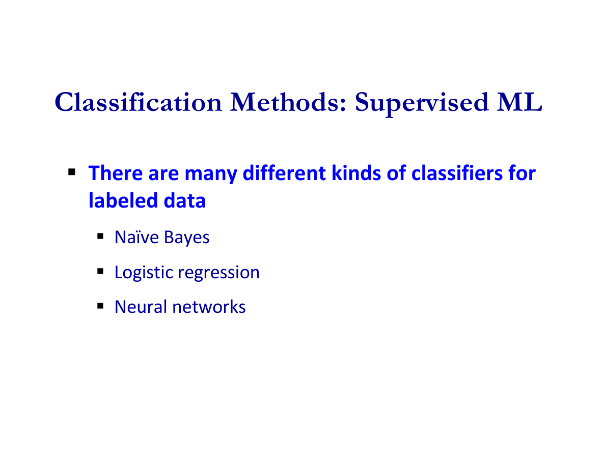
| 真实情况 | 模型预测 | 含义 | 业务影响 |
|---|---|---|---|
| spam | spam | true positive | 成功拦截 |
| normal | spam | false positive | 误杀正常邮件 |
| spam | normal | false negative | 漏掉风险邮件 |
线性分类器表达能力有限，于是课程转向 neural network：多层参数和非线性 activation 可以学习更复杂边界。 Lecture 10, pp.19-30
4. 核心模型 / 算法
本讲的核心机制应结合逐步叙事和原始 slide 阅读。重点术语已用蓝色高亮；鼠标悬浮或键盘聚焦可查看中文解释。 Lecture 10, pp.2-30
5. 数学公式与模型机制
本讲以概念或流程图为主。若原 PDF 中的图示包含公式，需要结合原图人工检查。
6. 现实应用
垃圾邮件、工单路由、sentiment analysis 和内容审核。 Lecture 10, pp.19-30
7. 本讲解决的问题与遗留问题
解决了什么
线性分类器表达能力有限，于是课程转向 neural network：多层参数和非线性 activation 可以学习更复杂边界。
仍需注意
方法效果取决于数据、任务、评价指标和计算成本，需要结合后续 lecture 继续完善。
继续阅读
原图代表页：p.8, p.16, p.25。建议先核对结构图和公式页，再进入下一讲。
8. 复习重点
- 按“问题 - 方法 - 局限 - 改进”复述本讲。
- 能够解释蓝色术语，并定位对应 slide。
- 结合原始课件图像检查结构图、表格和公式。
9. 术语表
| neural network | neural network 通过多层参数变换和 activation function 学习复杂映射。 |
|---|---|
| Naive Bayes | Naive Bayes 使用条件独立假设构建简洁的概率分类器。 |
10. 原始课件页面展示
以下页面由原始 PDF 渲染。点击图片可放大查看。
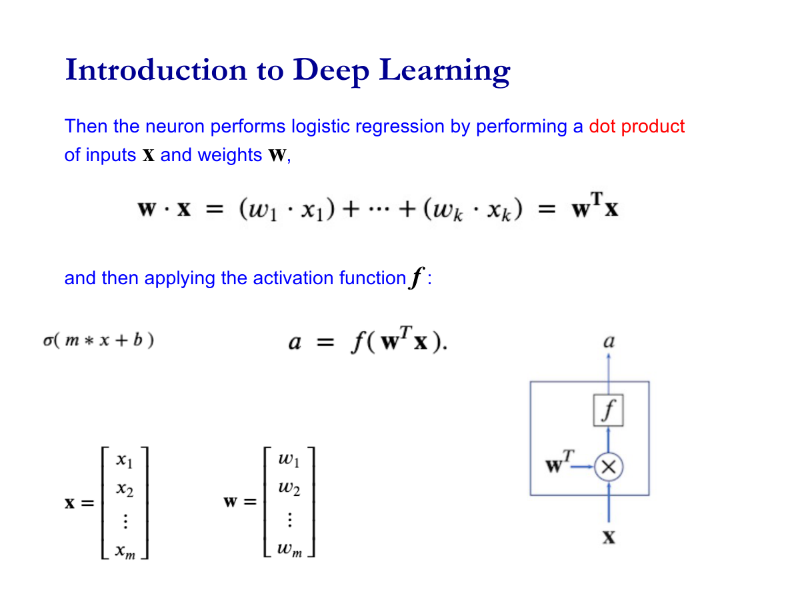
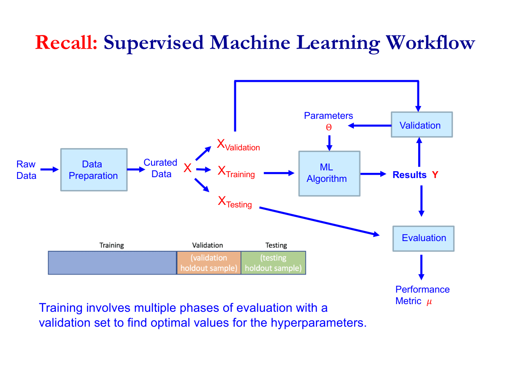
Lecture 11
Lecture 11: 泛化、过拟合与调优 / Generalization and Tuning
源文件：Lecture 11 -- Deep Learning -- Generalization and Tuning.pdf。本文由原始 PDF 逐页提取生成，不读取 DOCX 笔记。
1. 本讲引入
Lecture 10 引入 neural network 后，模型表达能力显著增强。新的问题不再是“模型能否拟合训练数据”，而是“它能否在未见数据上保持性能”。Lecture 11 因此把注意力转向 generalization、overfitting 和 tuning。更复杂的模型需要更严格的实验纪律。 Lecture 11, pp.2-10
课件将数据拆分为 train、validation 和 test。train 用于更新参数，validation 用于选择 hyperparameter，test 应尽量保留到最终评价。这个区分防止开发过程无意中针对 test set 调参。课程开始从算法理解进入可靠建模实践。 Lecture 11, pp.11-21
2. 问题背景
overfitting 的本质是模型学到了训练样本中的偶然细节。网络越宽、越深、参数越多，记住数据的能力越强。训练 loss 持续下降并不保证 validation loss 同步改善。课件用训练曲线提醒学生观察两者分离的位置。 Lecture 11, pp.2-10
regularization、dropout 和 early stopping 分别从不同角度限制模型。regularization 惩罚过大的参数，dropout 在训练时随机屏蔽部分连接，early stopping 在 validation 表现恶化前终止训练。validation curve 因此不只是报告结果，而是判断模型何时开始记忆训练样本的诊断工具。它们都在做同一件事：牺牲部分拟合自由度，换取泛化。 Lecture 11, pp.11-21
tuning 还涉及 learning rate、batch size、网络宽度和深度。现实项目的算力预算有限，不可能无限枚举组合。系统化实验记录和 validation 设计比盲目扩大模型更重要。这些经验会直接延续到后面的 RNN 和 Transformer。 Lecture 11, pp.22-32 image-based content; check original slide
3. 逐步叙事笔记
神经网络更强，但参数增加后更容易 overfit。训练集表现好并不代表未见数据上表现好。 Lecture 11, pp.2-10
课程用 train、validation 和 test 划分组织实验，并引入 regularization、dropout 与 early stopping 控制泛化。 Lecture 11, pp.11-21
课件例子Lecture 11, p.17
例子：validation curve 如何暴露 overfitting
课件用 train / validation / test 的划分说明，训练集 loss 下降不等于模型变好。当 validation loss 开始上升时，模型可能已经开始记忆训练样本。regularization、dropout 和 early stopping 都是在控制这个风险。
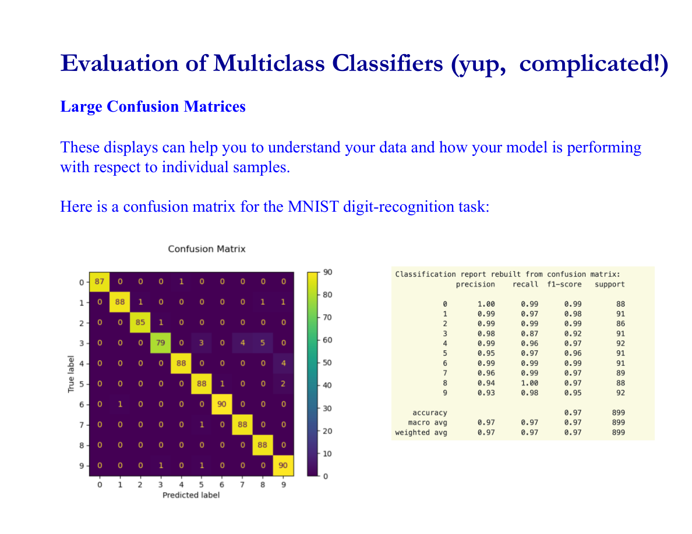
| 现象 | 可能原因 | 常见处理 |
|---|---|---|
| train loss 降，validation loss 升 | overfitting | early stopping / dropout |
| 两者都高 | underfitting | 增大模型或训练时间 |
| validation 不稳定 | 学习率或 batch 设置不合适 | 调 learning rate / batch size |
hyperparameter tuning 需要系统比较 learning rate、batch size、网络宽度和深度，而不是盲目增加计算量。 Lecture 11, pp.22-34 image-based content; check original slide
4. 核心模型 / 算法
本讲的核心机制应结合逐步叙事和原始 slide 阅读。重点术语已用蓝色高亮；鼠标悬浮或键盘聚焦可查看中文解释。 Lecture 11, pp.2-34
5. 数学公式与模型机制
本讲以概念或流程图为主。若原 PDF 中的图示包含公式，需要结合原图人工检查。
6. 现实应用
稳定训练、模型选择、成本控制和生产环境泛化评估。 Lecture 11, pp.22-34
7. 本讲解决的问题与遗留问题
解决了什么
hyperparameter tuning 需要系统比较 learning rate、batch size、网络宽度和深度，而不是盲目增加计算量。
仍需注意
方法效果取决于数据、任务、评价指标和计算成本，需要结合后续 lecture 继续完善。
继续阅读
原图代表页：p.9, p.17, p.27。建议先核对结构图和公式页，再进入下一讲。
8. 复习重点
- 按“问题 - 方法 - 局限 - 改进”复述本讲。
- 能够解释蓝色术语，并定位对应 slide。
- 结合原始课件图像检查结构图、表格和公式。
9. 术语表
| regularization | regularization 通过限制模型自由度改善泛化能力。 |
|---|---|
| dropout | dropout 在训练期间随机屏蔽部分连接，以减少过拟合。 |
| validation | validation set 用于选择 hyperparameter，不应替代最终 test set。 |
10. 原始课件页面展示
以下页面由原始 PDF 渲染。点击图片可放大查看。
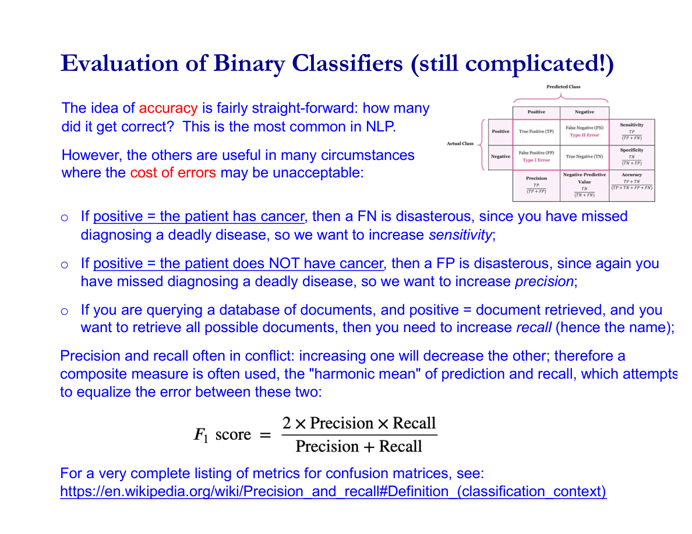
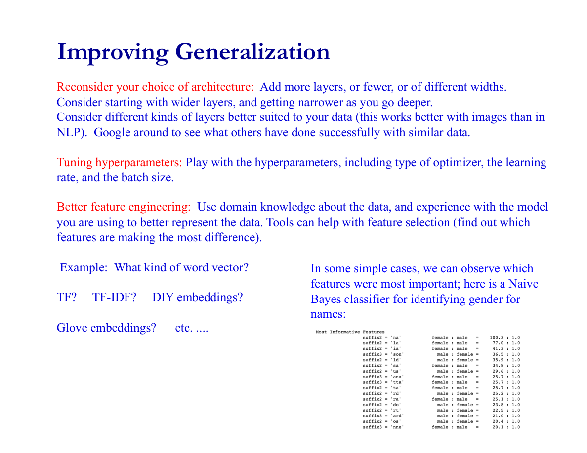
Lecture 12
Lecture 12: 序列数据与循环神经网络 / Sequence Data and Recurrent NNs
源文件：Lecture 12 -- Sequence Data and Recurrent NNs.pdf。本文由原始 PDF 逐页提取生成，不读取 DOCX 笔记。
1. 本讲引入
前面的 supervised learning 和 neural network 主要把输入看作固定长度 feature vector。语言和音频却不是静态对象，而是随位置或时间展开的 sequence data。词序改变会改变句义，较早出现的信息还可能影响很久之后的判断。Lecture 12 因此引入 recurrent neural network（RNN），让模型拥有跨时间步传递信息的机制。 Lecture 12, pp.2-8
RNN 的关键不是简单增加一层网络，而是引入 hidden state。每个时间步同时读取当前输入和上一时刻状态，再把更新后的状态传给下一步。这样，模型可以接收不同长度句子，也可以逐步产生输出。这个视角为 language model、sequence labeling 和语音处理建立统一框架。 Lecture 12, pp.9-18 image-based content; check original slide
2. 问题背景
固定长度向量会把顺序压平。对于文本，“dog bites man”和“man bites dog”包含相似词项，却表达不同关系。对于音频，声音模式也会随时间变化。NLP 需要显式建模顺序，而不能只统计词是否出现。 Lecture 12, pp.2-8
课件用展开后的 RNN 图示说明循环结构。hidden state 像一条在时间轴上流动的记忆，每一步都更新。权重在不同时间步共享，因此模型可以处理可变长度输入。图示页文本提取较少，需要结合原始 slide 查看连接方向。 Lecture 12, pp.9-18 image-based content; check original slide
循环结构也带来训练难题。backpropagation through time 必须跨越多个时间步传播梯度，长序列中容易出现 vanishing gradient 或 exploding gradient。模型可能记得近处 token，却忘掉远处依赖。后续 LSTM、GRU 和 attention 都是在回应这个限制。 Lecture 12, pp.19-34 image-based content; check original slide
3. 逐步叙事笔记
普通网络把输入看作固定长度向量，但文本和音频是随时间展开的 sequence data。顺序变化会改变意义。 Lecture 12, pp.2-8
RNN 通过 hidden state 把历史信息传递到当前时间步，使模型可以处理不同长度的输入和输出。 Lecture 12, pp.9-18 image-based content; check original slide
训练 RNN 需要 backpropagation through time。随着序列变长，vanishing gradient 和 long-term dependency 逐渐暴露。 Lecture 12, pp.19-29 image-based content; check original slide
辅助类比，不是课件原文
类比：RNN 像记忆力有限的课堂笔记员
它每听到一个新词就更新笔记，但笔记本只有一页。刚讲过的内容很清楚，很久以前的细节可能只剩“好像很重要”。这就是 vanishing gradient 和 long-term dependency 在直觉层面的样子。
4. 核心模型 / 算法
本讲的核心机制应结合逐步叙事和原始 slide 阅读。重点术语已用蓝色高亮；鼠标悬浮或键盘聚焦可查看中文解释。 Lecture 12, pp.2-29
5. 数学公式与模型机制
\[h_t=\phi(W_{xh}x_t+W_{hh}h_{t-1}+b_h)\]
RNN hidden state 汇总当前输入和历史状态。 Lecture 12, p.14
6. 现实应用
时间序列、早期 language model、日志分析和语音处理。 Lecture 12, pp.19-29
7. 本讲解决的问题与遗留问题
解决了什么
训练 RNN 需要 backpropagation through time。随着序列变长，vanishing gradient 和 long-term dependency 逐渐暴露。
仍需注意
方法效果取决于数据、任务、评价指标和计算成本，需要结合后续 lecture 继续完善。
继续阅读
原图代表页：p.9, p.14, p.24。建议先核对结构图和公式页，再进入下一讲。
8. 复习重点
- 按“问题 - 方法 - 局限 - 改进”复述本讲。
- 能够解释蓝色术语，并定位对应 slide。
- 结合原始课件图像检查结构图、表格和公式。
9. 术语表
| sequence data | sequence data 是带有顺序关系的数据，例如文本 token 序列和音频时间序列。 |
|---|---|
| hidden state | hidden state 是 RNN 在时间步之间传递的内部记忆。 |
| RNN | RNN 通过循环连接处理 sequence data，并在 hidden state 中保存历史信息。 |
| backpropagation | backpropagation 根据 loss 反向计算各参数的梯度。 |
| vanishing gradient | vanishing gradient 指梯度在深层或长序列传播时逐渐变小，导致早期参数难以学习。 |
10. 原始课件页面展示
以下页面由原始 PDF 渲染。点击图片可放大查看。
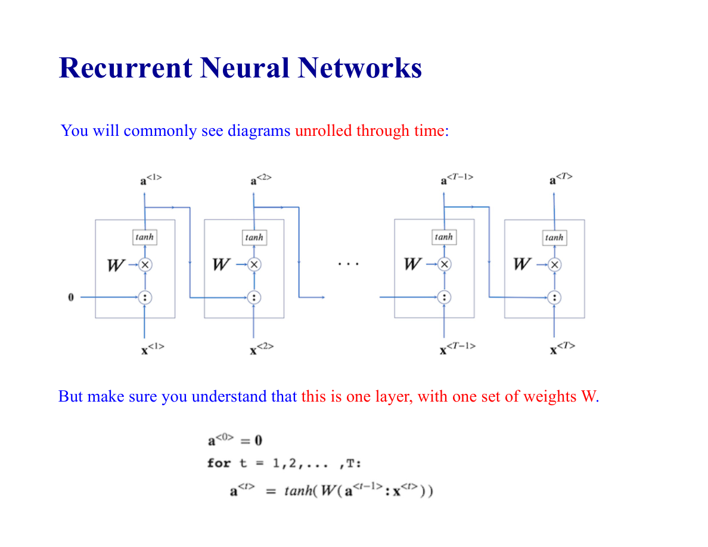
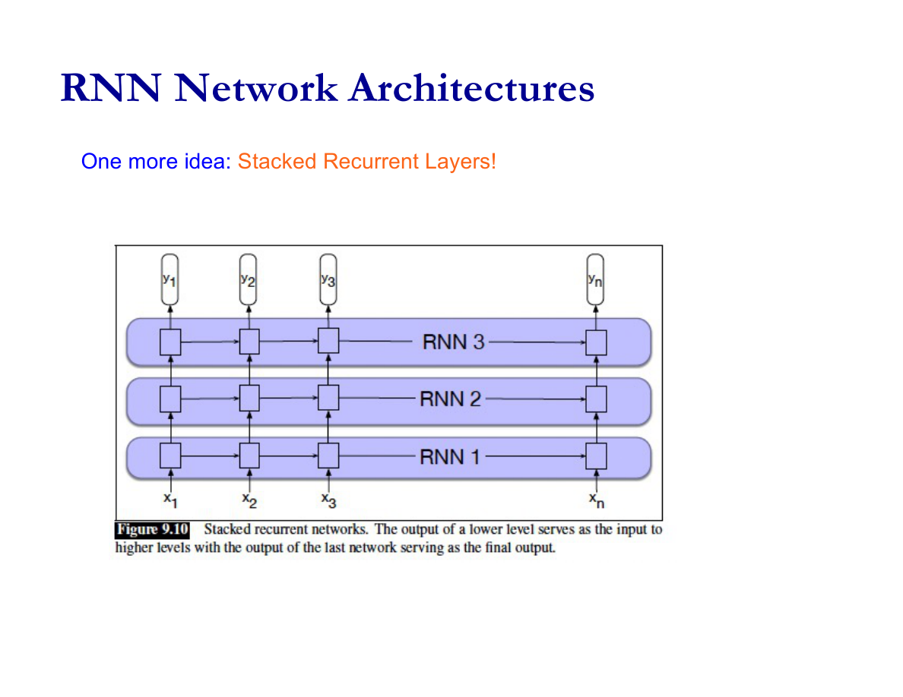
Lecture 13
Lecture 13: RNN 的应用与改进 / Applications of RNNs
源文件：Lecture 13 -- Applications of RNNs.pdf。本文由原始 PDF 逐页提取生成，不读取 DOCX 笔记。
1. 本讲引入
Lecture 12 建立了 RNN 的基本结构，但一个能运行的循环网络还不是完整解决方案。Lecture 13 开始追问：RNN 可以怎样映射输入和输出序列。不同任务可能需要 sequence-to-one、one-to-sequence 或 sequence-to-sequence 结构。课程由网络定义进入应用设计。 Lecture 13, pp.2-10
与此同时，vanilla RNN 的 long-term dependency 问题仍然存在。较早信息经过许多时间步后容易衰减，gradient 也难以稳定传播。LSTM 和 GRU 使用 gate 控制记忆更新，让网络决定什么应该保留、忘记或写入。它们是对普通 hidden state 的结构性改进。 Lecture 13, pp.11-21
2. 问题背景
language modeling、text generation 和 sequence labeling 对输出结构的要求不同。分类任务可能只读取最终状态，生成任务则必须逐步输出 token。课件通过不同网络图把任务形式区分开。理解输入输出拓扑比记住单个 API 更重要。 Lecture 13, pp.2-10
LSTM 的 cell state 提供更直接的信息通路。forget gate 控制旧记忆保留比例，input gate 控制新信息写入，output gate 决定当前暴露的状态。GRU 用更紧凑的 gate 组合实现类似目标。这些图示解释了模型为什么比 vanilla RNN 更适合长序列。 Lecture 13, pp.11-21
bidirectional RNN（BRNN）进一步利用左右上下文。对于 POS tagging、NER 和离线文本分析，未来 token 往往能帮助解释当前 token。但实时生成不能提前看到未来，因此 BRNN 不是万能替代。machine translation 和更长文本仍会推动 attention 出现。 Lecture 13, pp.22-32
3. 逐步叙事笔记
RNN 可以用于 sequence classification、language modeling 和 generation，但普通循环结构难以长期保留信息。 Lecture 13, pp.2-10
LSTM 与 GRU 使用 gate 控制记忆更新，试图让重要信息跨越更多时间步。 Lecture 13, pp.11-21
课件例子Lecture 13, p.17
例子：LSTM 的 gate 像可控记忆开关
课件用 LSTM / GRU 图示说明，模型不再把所有历史信息都塞进一个普通 hidden state。forget gate 决定旧信息保留多少，input gate 决定新信息写入多少，output gate 决定当前暴露多少状态。这个例子贴近 long-term dependency，因为 gate 的作用就是延长重要信息的寿命。
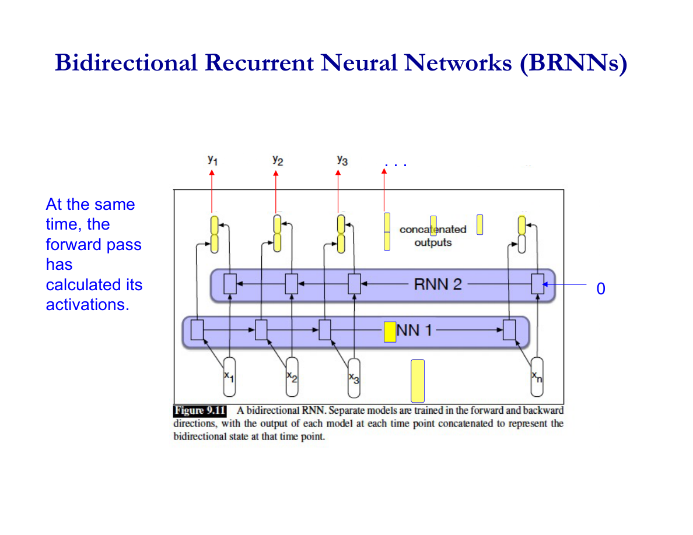
| 结构 | 解决的问题 | 直觉 |
|---|---|---|
| vanilla RNN | 可处理序列但记忆弱 | 每步都覆盖笔记 |
| LSTM | 长距离依赖 | 给记忆加门控 |
| GRU | 更紧凑的门控 | 少一些部件，目标类似 |
bidirectional RNN 同时利用前后文，适合 tagging 等离线任务，但它不能直接用于严格实时场景。 Lecture 13, pp.22-32
4. 核心模型 / 算法
本讲的核心机制应结合逐步叙事和原始 slide 阅读。重点术语已用蓝色高亮；鼠标悬浮或键盘聚焦可查看中文解释。 Lecture 13, pp.2-32
5. 数学公式与模型机制
本讲以概念或流程图为主。若原 PDF 中的图示包含公式，需要结合原图人工检查。
6. 现实应用
序列标注、传感器预测、离线文本分析和生成。 Lecture 13, pp.22-32
7. 本讲解决的问题与遗留问题
解决了什么
bidirectional RNN 同时利用前后文，适合 tagging 等离线任务，但它不能直接用于严格实时场景。
仍需注意
方法效果取决于数据、任务、评价指标和计算成本，需要结合后续 lecture 继续完善。
继续阅读
原图代表页：p.10, p.17, p.26。建议先核对结构图和公式页，再进入下一讲。
8. 复习重点
- 按“问题 - 方法 - 局限 - 改进”复述本讲。
- 能够解释蓝色术语，并定位对应 slide。
- 结合原始课件图像检查结构图、表格和公式。
9. 术语表
| language model | language model 为 token 序列分配概率，并可预测下一个 token。 |
|---|---|
| RNN | RNN 通过循环连接处理 sequence data，并在 hidden state 中保存历史信息。 |
| LSTM | LSTM 使用门控机制缓解普通 RNN 的 long-term dependency 问题。 |
| GRU | GRU 是较简洁的门控循环网络，用门控结构控制记忆更新。 |
| classification | classification 将输入分配到预定义类别，例如 spam detection 或 sentiment analysis。 |
10. 原始课件页面展示
以下页面由原始 PDF 渲染。点击图片可放大查看。
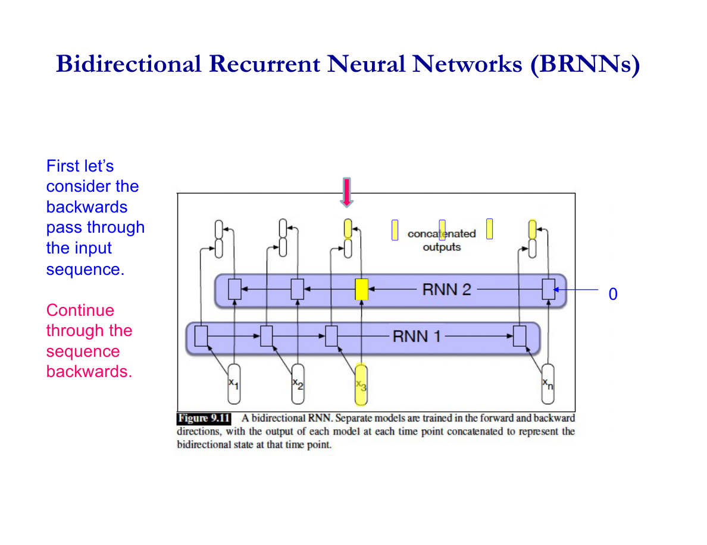
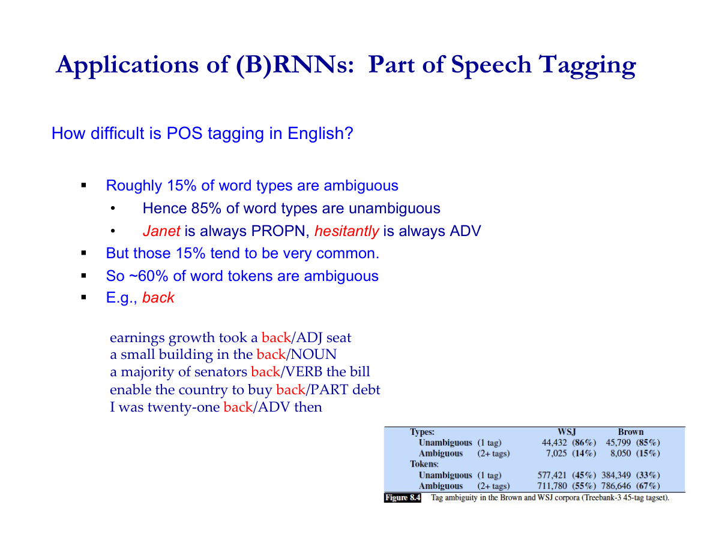
Lecture 14
Lecture 14: 生成模型 / Generative Models
源文件：Lecture 14 -- Generative Models.pdf。本文由原始 PDF 逐页提取生成，不读取 DOCX 笔记。
1. 本讲引入
前面很多任务都在判断输入属于什么类别。Lecture 14 转向另一种目标：模型怎样产生新的 sequence。生成任务不是一次性输出标签，而是在每一步预测下一个 token 的概率分布。这个变化把 language model 从评价工具变成实际的生成引擎。 Lecture 14, pp.2-9
一旦模型输出概率分布，新的设计问题立刻出现：应该怎样选择下一个 token。总是选择最大概率会稳定但单调，完全随机采样又可能失去连贯性。decoding strategy 因此成为生成质量的一部分。课程开始讨论概率、控制和多样性的权衡。 Lecture 14, pp.10-18
2. 问题背景
判别模型的输出空间通常固定，例如若干 class。生成模型的输出空间却会随着长度迅速扩张，因为每个新 token 都会改变后续条件概率。模型必须反复执行预测、选择和追加。误差也会在生成链条中累积。 Lecture 14, pp.2-9
课件比较 greedy decoding 和 sampling。greedy 方法每一步取 argmax，容易陷入常见表达；随机 sampling 保留多样性，却可能选到低质量 token。temperature 可以调节概率分布的尖锐程度。top-k 和 top-p 则限制候选集合。 Lecture 14, pp.10-18
beam search 同时保留若干候选序列，用更高计算成本换取更优路径。现实 chatbot、摘要和自动补全系统都需要在质量、延迟与多样性之间权衡。这些 decoding 思想也会在 Transformer 和 GPT 中继续出现。下一讲将把生成模型放入 machine translation。 Lecture 14, pp.19-21
3. 逐步叙事笔记
生成模型不再只判断类别，而是逐步预测下一个 token。每一步输出概率分布，再决定如何采样。 Lecture 14, pp.2-9
greedy decoding 简单稳定，却容易单调；随机 sampling 增加多样性，也可能降低连贯性。 Lecture 14, pp.10-18
课件例子Lecture 14, p.12
例子：从概率分布采样下一个 token
课件比较 greedy decoding、sampling、temperature、top-k 和 top-p。生成模型每一步输出的是 token probability distribution，不是唯一答案。不同 decoding strategy 会改变文本的稳定性和多样性。
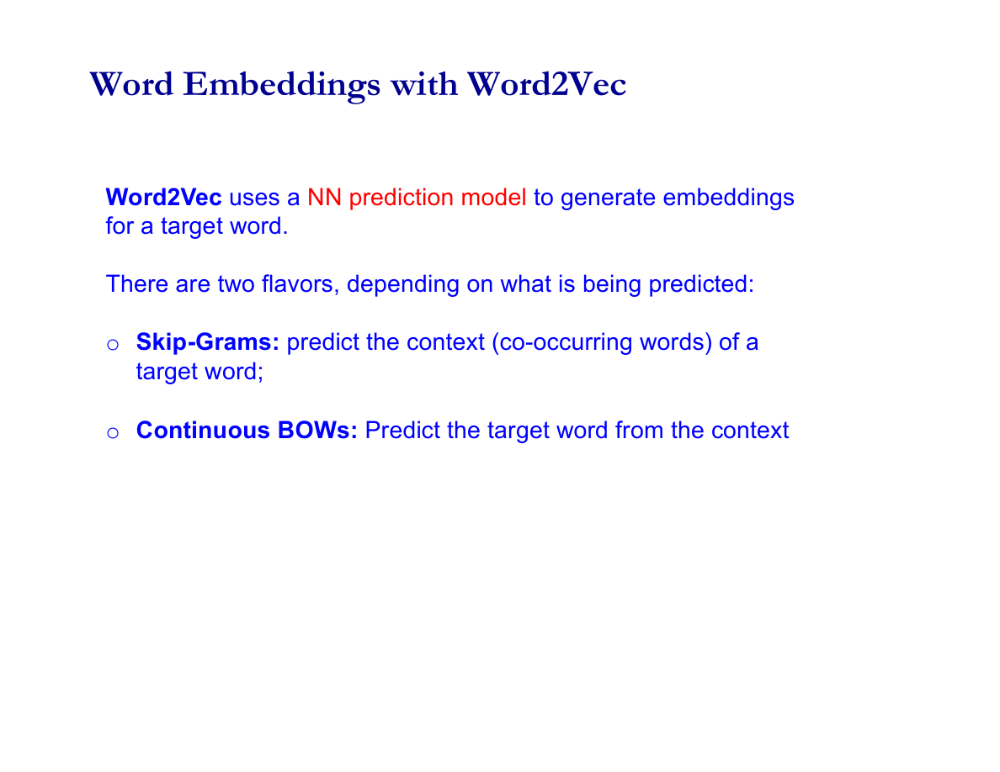
Python example: sample next token
import random
tokens = ['the', 'cat', 'sat']
probs = [0.6, 0.3, 0.1]
print(random.choices(tokens, weights=probs, k=1)[0])解释： 这段代码展示按概率抽样 next token。greedy decoding 总选最大概率；sampling 会保留一定随机性。
temperature、top-k、top-p 和 beam search 在确定性、多样性和计算成本之间取得不同平衡。 Lecture 14, pp.19-27
4. 核心模型 / 算法
本讲的核心机制应结合逐步叙事和原始 slide 阅读。重点术语已用蓝色高亮；鼠标悬浮或键盘聚焦可查看中文解释。 Lecture 14, pp.2-27
5. 数学公式与模型机制
本讲以概念或流程图为主。若原 PDF 中的图示包含公式，需要结合原图人工检查。
6. 现实应用
chatbot、自动补全、摘要和可控文本生成。 Lecture 14, pp.19-27
7. 本讲解决的问题与遗留问题
解决了什么
temperature、top-k、top-p 和 beam search 在确定性、多样性和计算成本之间取得不同平衡。
仍需注意
方法效果取决于数据、任务、评价指标和计算成本，需要结合后续 lecture 继续完善。
继续阅读
原图代表页：p.5, p.12, p.21。建议先核对结构图和公式页，再进入下一讲。
8. 复习重点
- 按“问题 - 方法 - 局限 - 改进”复述本讲。
- 能够解释蓝色术语，并定位对应 slide。
- 结合原始课件图像检查结构图、表格和公式。
9. 术语表
| supervised learning | supervised learning 使用带标签样本学习输入到目标输出之间的映射。 |
|---|---|
| Transformer | Transformer 以 self-attention 为核心，支持序列位置之间直接建立依赖。 |
10. 原始课件页面展示
以下页面由原始 PDF 渲染。点击图片可放大查看。
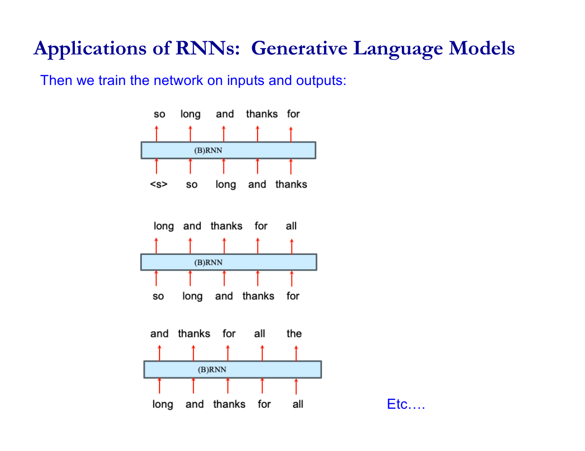
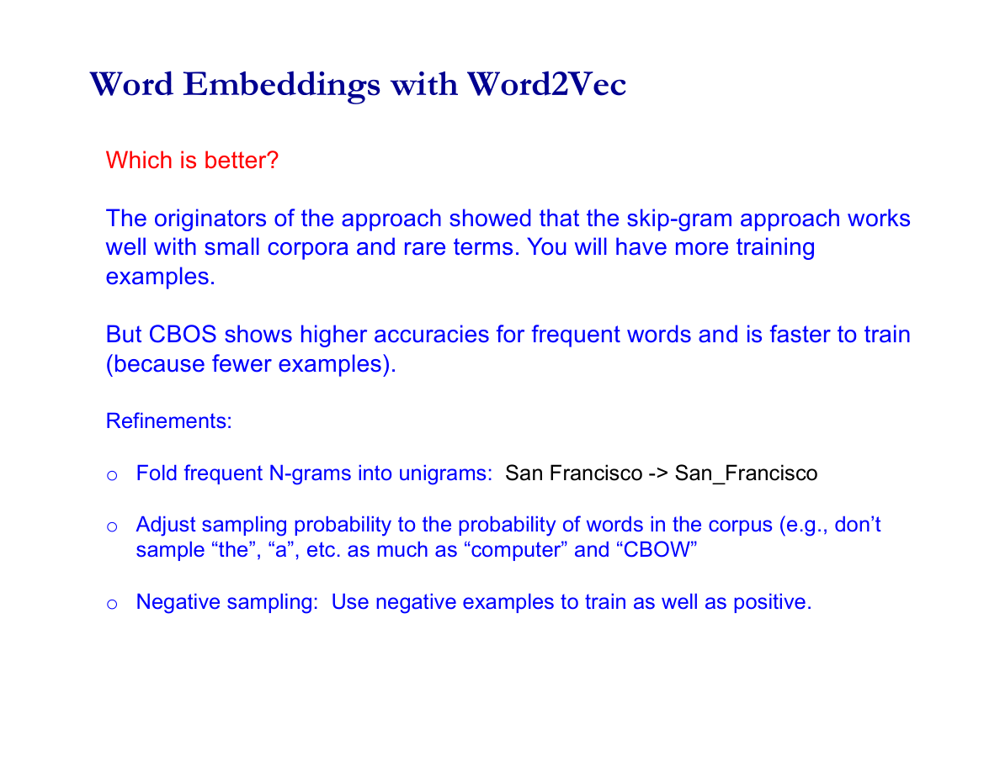
Lecture 15
Lecture 15: 机器翻译与注意力 / Machine Translation and Attention
源文件：Lecture 15 -- MachineTranslation.pdf。本文由原始 PDF 逐页提取生成，不读取 DOCX 笔记。
1. 本讲引入
Lecture 14 已经说明模型可以逐 token 生成文本。Lecture 15 选择 machine translation 作为更具体、更困难的生成任务。翻译不能只做 word-by-word 替换，因为语言之间的词序、语法和歧义并不一致。系统需要理解整段源语言，再组织目标语言输出。 Lecture 15, pp.2-8
encoder-decoder 提供了第一条神经路线。encoder 读取源句并压缩信息，decoder 根据中间表示逐步生成目标句。这个架构把输入 sequence 和输出 sequence 分离开。它也暴露出一个限制：固定长度 context vector 很难完整保存长句。 Lecture 15, pp.9-17 image-based content; check original slide
2. 问题背景
传统翻译面对的不只是词汇映射。一个词在不同上下文中可能对应不同译法，目标语言还可能调整成分顺序。训练数据必须让模型同时学习语义和生成规律。machine translation 因此成为 sequence model 的重要试验场。 Lecture 15, pp.2-8
课件的 encoder-decoder 图示把整个源句汇总到单个向量。短句尚可处理，长句却容易丢失前部信息。RNN hidden state 必须承担过多压缩责任。图示页文本提取较少，需要结合 slide image 查看信息流。 Lecture 15, pp.9-17 image-based content; check original slide
attention 改变了这个瓶颈。decoder 在每一步生成时，不再只依赖固定摘要，而是动态查看不同输入位置。attention weights 表示当前输出更依赖哪些源 token。这个机制首先改善翻译，随后成为 Transformer 的核心。 Lecture 15, pp.18-27 image-based content; check original slide
3. 逐步叙事笔记
machine translation 必须处理词序、歧义和长距离依赖。传统方法逐步让位于神经 sequence-to-sequence 模型。 Lecture 15, pp.2-8
encoder-decoder 用 encoder 压缩源句，再由 decoder 逐步生成目标句。但固定长度 context vector 容易成为瓶颈。 Lecture 15, pp.9-17 image-based content; check original slide
课件例子Lecture 15, p.17
例子：encoder-decoder 如何翻译句子
课件用 encoder-decoder 图示说明 machine translation 的基本流程。encoder 读取 source tokens 并压缩为表示，decoder 再逐步生成 target tokens。问题在于固定长度 context vector 会成为瓶颈，长句前半部分的信息容易被压缩丢失。
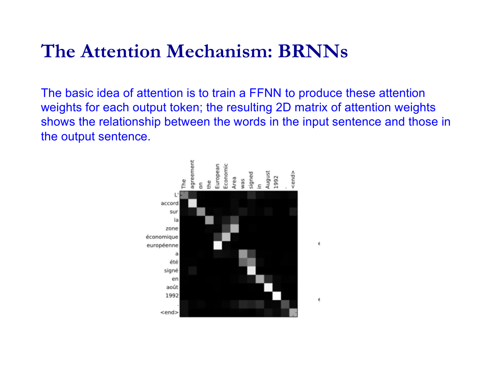
source tokens→encoder→context vector→decoder→target tokens
| 阶段 | 输入 | 输出 |
|---|---|---|
| encoder | source tokens | hidden representation |
| context | encoded sentence | context vector |
| decoder | context + previous target token | next target token |
attention 让 decoder 在每一步动态查看输入位置，为后续 Transformer 奠定基础。 Lecture 15, pp.18-27 image-based content; check original slide
4. 核心模型 / 算法
本讲的核心机制应结合逐步叙事和原始 slide 阅读。重点术语已用蓝色高亮；鼠标悬浮或键盘聚焦可查看中文解释。 Lecture 15, pp.2-27
5. 数学公式与模型机制
本讲以概念或流程图为主。若原 PDF 中的图示包含公式，需要结合原图人工检查。
6. 现实应用
跨语言客服、本地化、字幕、摘要和多模态对齐。 Lecture 15, pp.18-27
7. 本讲解决的问题与遗留问题
解决了什么
attention 让 decoder 在每一步动态查看输入位置，为后续 Transformer 奠定基础。
仍需注意
方法效果取决于数据、任务、评价指标和计算成本，需要结合后续 lecture 继续完善。
继续阅读
原图代表页：p.9, p.17, p.23。建议先核对结构图和公式页，再进入下一讲。
8. 复习重点
- 按“问题 - 方法 - 局限 - 改进”复述本讲。
- 能够解释蓝色术语，并定位对应 slide。
- 结合原始课件图像检查结构图、表格和公式。
9. 术语表
| encoder-decoder | encoder-decoder 将输入编码为中间表示，再由 decoder 逐步生成目标序列。 |
|---|---|
| machine translation | machine translation 将一种自然语言自动转换为另一种自然语言。 |
| Transformer | Transformer 以 self-attention 为核心，支持序列位置之间直接建立依赖。 |
| attention | attention 让模型在处理当前 token 时动态关注输入序列中的不同位置。 |
10. 原始课件页面展示
以下页面由原始 PDF 渲染。点击图片可放大查看。
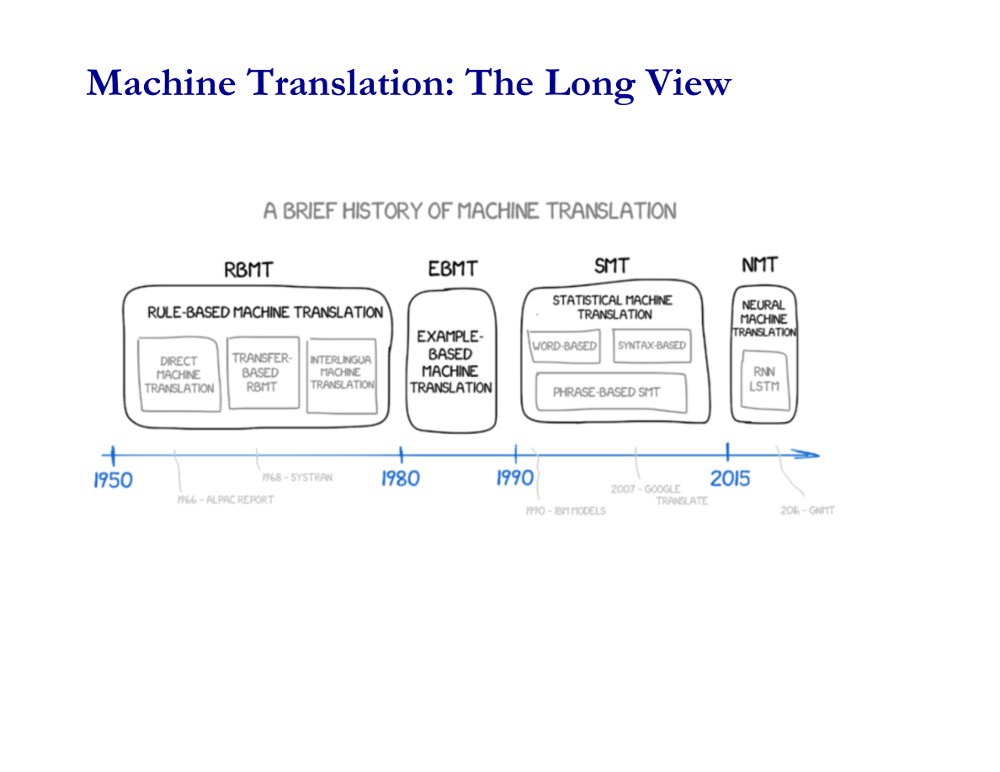
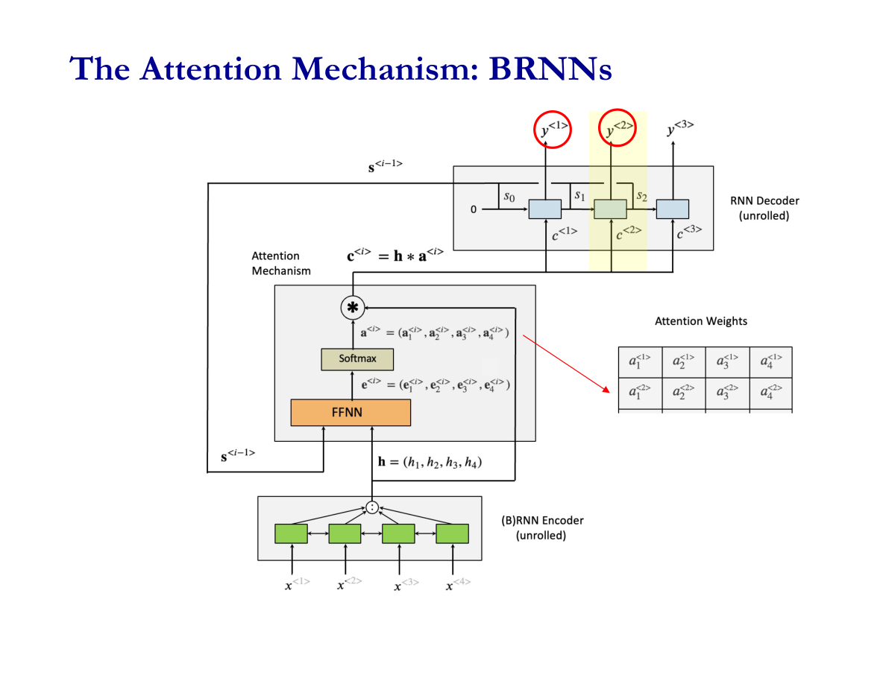
Lecture 16
Lecture 16: 神经网络高级特性 / Advanced Neural Network Features
源文件：Lecture 16 -- NeuralNetwork.Advanced.pdf。本文由原始 PDF 逐页提取生成，不读取 DOCX 笔记。
1. 本讲引入
RNN、LSTM 和 encoder-decoder 增加了网络深度与结构复杂度。Lecture 16 暂时停下应用扩展，回到训练本身。模型如果无法稳定优化，再漂亮的架构也不会得到可靠结果。课程因此集中讨论 neural network 的高级训练特性。 Lecture 16, pp.2-10
深层网络的梯度会穿过很多层。数值尺度不稳定时，训练可能缓慢、震荡或完全发散。initialization、normalization、optimizer 和 gradient clipping 分别处理不同环节。它们让后面的 attention 和 Transformer 能够实际训练。 Lecture 16, pp.11-20
2. 问题背景
网络越深，参数更新越依赖前后层之间稳定的信息流。过小 gradient 会让早期层几乎不再学习，过大 gradient 会造成数值爆炸。这个问题在 sequence model 中尤其明显，因为时间展开相当于增加更多传播路径。训练技巧不是附属细节，而是模型能力的前提。 Lecture 16, pp.2-10
normalization 尝试控制中间表示的尺度，optimizer 则改善参数更新方向和步长。合理 initialization 避免模型一开始就进入极端区域。gradient clipping 对 RNN 等模型尤其有用，可以限制更新幅度。课件通过结构与训练图示组织这些方法。 Lecture 16, pp.11-20
现实训练还要关注计算成本、batch 行为和收敛速度。同一个 architecture 在不同优化配置下可能得到完全不同结果。大型 NLP 系统必须记录实验、监控曲线并设置停止条件。下一讲继续讨论表示与结构能力的增强。 Lecture 16, pp.21-25 image-based content; check original slide
3. 逐步叙事笔记
深层网络虽然表达力强，但训练时会遇到梯度不稳定和收敛困难。 Lecture 16, pp.2-10
课件逐步引入 initialization、normalization、optimizer 和 gradient clipping，让训练过程更可控。 Lecture 16, pp.11-20
课件例子Lecture 16, p.15
例子：dropout 与 regularization 控制模型复杂度
课件在高级训练技巧中回到 regularization。dropout 在训练时随机关闭部分连接，让模型不能过度依赖某几个特征。这个例子说明，训练技巧不是附加装饰，而是在防止模型把训练集记得过于具体。
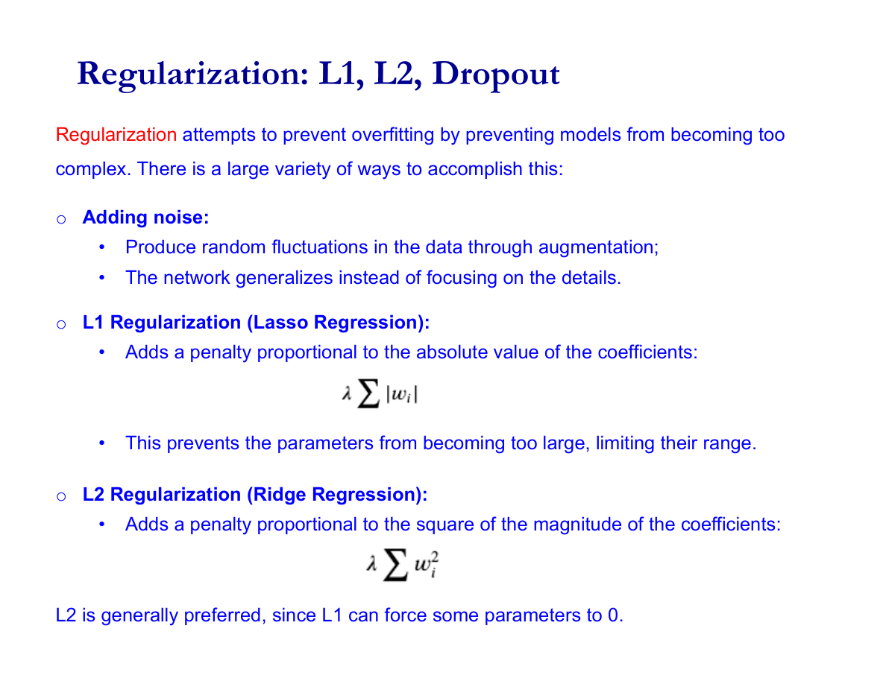
input○ ○ ○× dropout○ ○class
这些机制解决的是优化稳定性问题，为更深的序列模型和 attention 架构做准备。 Lecture 16, pp.21-29 image-based content; check original slide
4. 核心模型 / 算法
本讲的核心机制应结合逐步叙事和原始 slide 阅读。重点术语已用蓝色高亮；鼠标悬浮或键盘聚焦可查看中文解释。 Lecture 16, pp.2-29
5. 数学公式与模型机制
本讲以概念或流程图为主。若原 PDF 中的图示包含公式，需要结合原图人工检查。
6. 现实应用
大型模型训练、稳定收敛和工程调优。 Lecture 16, pp.21-29
7. 本讲解决的问题与遗留问题
解决了什么
这些机制解决的是优化稳定性问题，为更深的序列模型和 attention 架构做准备。
仍需注意
方法效果取决于数据、任务、评价指标和计算成本，需要结合后续 lecture 继续完善。
继续阅读
原图代表页：p.8, p.15, p.23。建议先核对结构图和公式页，再进入下一讲。
8. 复习重点
- 按“问题 - 方法 - 局限 - 改进”复述本讲。
- 能够解释蓝色术语，并定位对应 slide。
- 结合原始课件图像检查结构图、表格和公式。
9. 术语表
| attention | attention 让模型在处理当前 token 时动态关注输入序列中的不同位置。 |
|---|---|
| optimizer | optimizer 决定如何根据梯度更新参数，例如控制方向、步长和动量。 |
| normalization | normalization 在文本处理中统一表面形式，在网络中也可用于稳定数值尺度。 |
10. 原始课件页面展示
以下页面由原始 PDF 渲染。点击图片可放大查看。
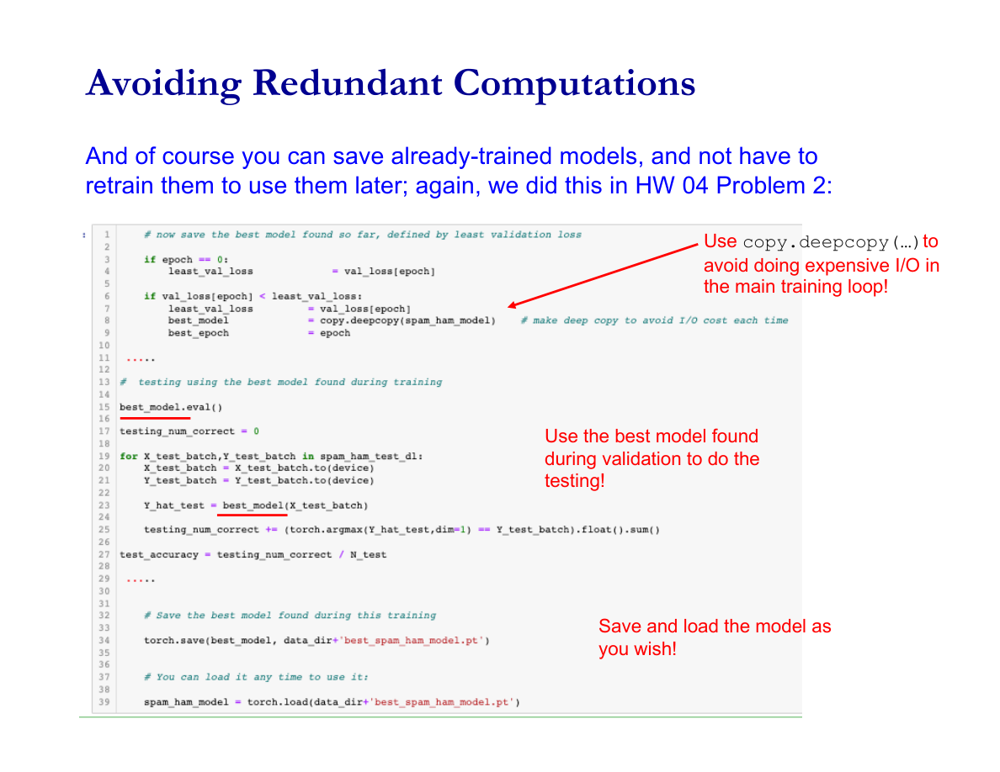
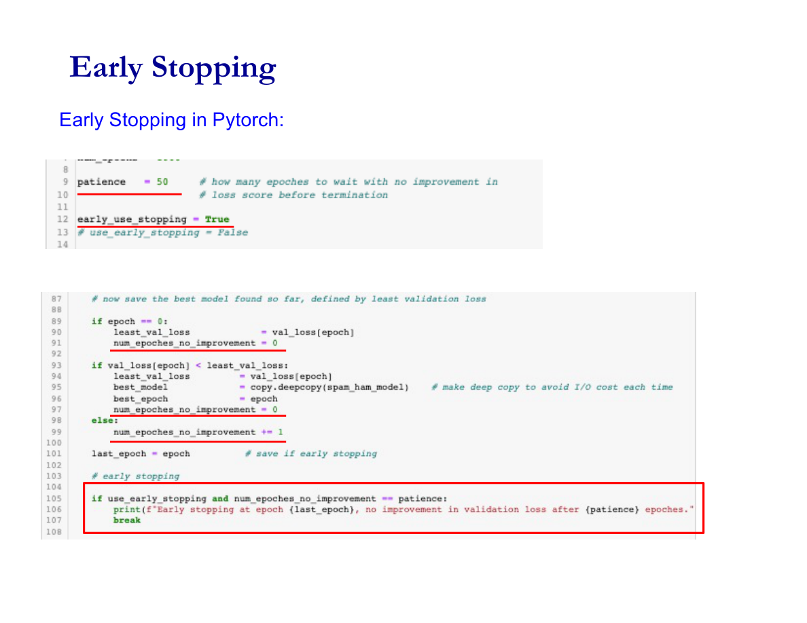
Lecture 17
Lecture 17: 高级网络特性与 Attention 前奏 / Advanced Features and Attention Prelude
源文件：Lecture 17 -- NeuralNetwork.Advanced.Features 2.pdf。本文由原始 PDF 逐页提取生成，不读取 DOCX 笔记。
1. 本讲引入
Lecture 16 解决训练稳定性后，课程继续追问网络怎样提取更有效的表示。Lecture 17 讨论 embedding layer、CNN 和更高级的网络特性。文本中的局部模式、稠密向量和层间信息流需要被同时考虑。课程正在为 attention-based model 做最后准备。 Lecture 17, pp.2-9
更深网络并不自动意味着更好。信息穿过层级时可能被削弱，gradient 也可能难以回传。residual connection 和 normalization 让输入可以沿更短路径传播。这个思路会直接进入 Transformer encoder。 Lecture 17, pp.10-18 image-based content; check original slide
2. 问题背景
embedding layer 把离散 token 转换为连续表示。CNN 可以在局部窗口中识别模式，例如短语或邻近特征。它们缓解了手工 feature engineering 的局限，却仍然偏向局部关系。长距离 token 依赖仍然难以直接表达。 Lecture 17, pp.2-9
课件中的网络结构图强调层间连接方式。普通堆叠要求信息逐层经过变换，residual connection 则允许输入绕过部分层。这样既保留原始信息，也为 backpropagation 提供短路径。深层网络因此更容易训练。 Lecture 17, pp.10-18 image-based content; check original slide
但 sequence task 仍有一个未解决问题：模型如何在长句中动态选择相关上下文。固定窗口和循环状态都可能成为瓶颈。attention 将把信息访问方式从“被动压缩”改为“主动查询”。Lecture 18 会把它提升为 Transformer 架构核心。 Lecture 17, pp.19-28
3. 逐步叙事笔记
课程继续讨论 embedding layer、CNN 与网络结构特性，目标是从局部模式和稠密表示中提取有效 feature。 Lecture 17, pp.2-9
随着模型更深，residual connection 和 normalization 帮助信息与梯度跨层传播。 Lecture 17, pp.10-18 image-based content; check original slide
课件例子Lecture 17, p.16
例子：residual connection 给信息留一条短路
课件的网络结构图展示 residual connection 如何把输入直接加到后续输出上。这样做让 forward pass 保留原始信息，也让 backpropagation 有更短路径。这个例子是 Transformer encoder block 的直接前奏。
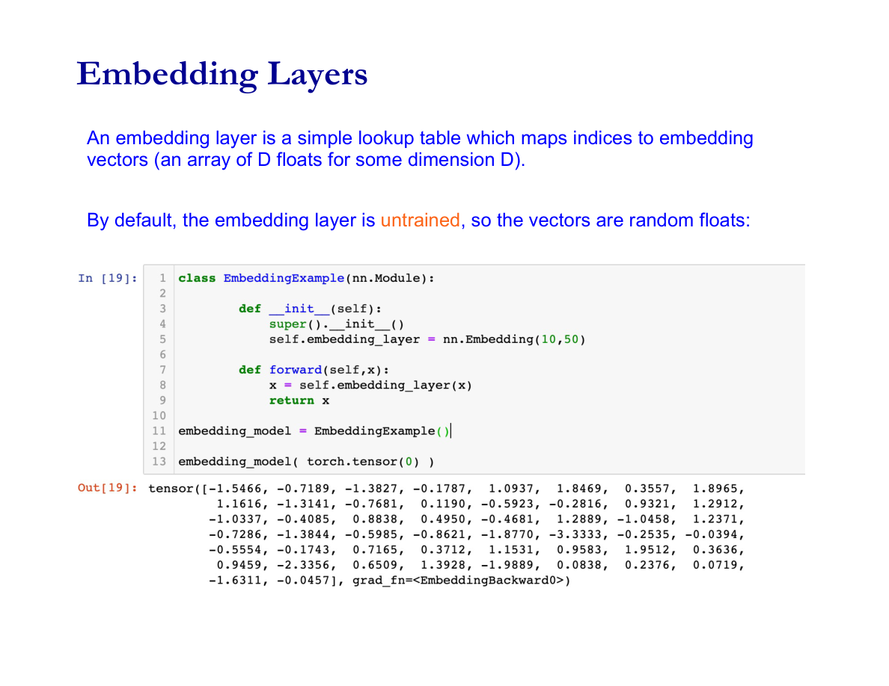
x→ F(x)+skip connection→ F(x)+x
序列任务仍存在信息瓶颈，因此后续需要 attention 让模型动态选择相关上下文。 Lecture 17, pp.19-27
4. 核心模型 / 算法
本讲的核心机制应结合逐步叙事和原始 slide 阅读。重点术语已用蓝色高亮；鼠标悬浮或键盘聚焦可查看中文解释。 Lecture 17, pp.2-27
5. 数学公式与模型机制
本讲以概念或流程图为主。若原 PDF 中的图示包含公式，需要结合原图人工检查。
6. 现实应用
序列建模、局部模式识别和 attention 架构准备。 Lecture 17, pp.19-27
7. 本讲解决的问题与遗留问题
解决了什么
序列任务仍存在信息瓶颈，因此后续需要 attention 让模型动态选择相关上下文。
仍需注意
方法效果取决于数据、任务、评价指标和计算成本，需要结合后续 lecture 继续完善。
继续阅读
原图代表页：p.9, p.16, p.24。建议先核对结构图和公式页，再进入下一讲。
8. 复习重点
- 按“问题 - 方法 - 局限 - 改进”复述本讲。
- 能够解释蓝色术语，并定位对应 slide。
- 结合原始课件图像检查结构图、表格和公式。
9. 术语表
| embedding | embedding 将离散对象映射为连续向量，使相似对象在空间中更接近。 |
|---|---|
| attention | attention 让模型在处理当前 token 时动态关注输入序列中的不同位置。 |
| residual connection | residual connection 让信息绕过部分层，并与后续输出聚合。 |
| CNN | CNN 使用局部窗口识别邻近模式，适合提取局部 feature。 |
| normalization | normalization 在文本处理中统一表面形式，在网络中也可用于稳定数值尺度。 |
10. 原始课件页面展示
以下页面由原始 PDF 渲染。点击图片可放大查看。
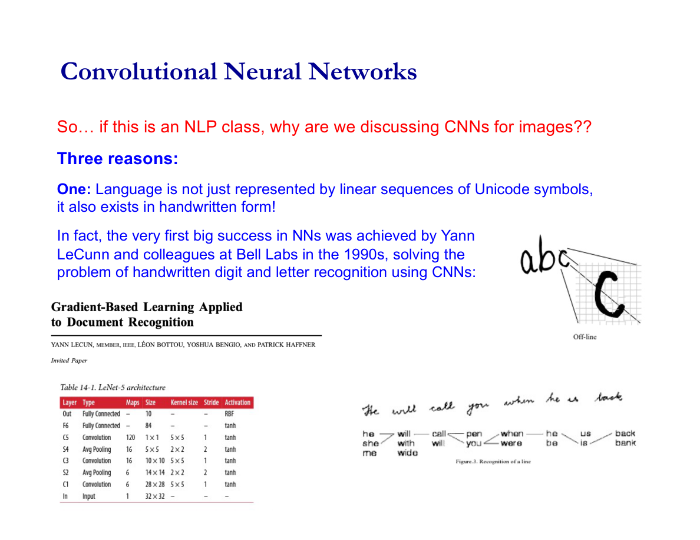
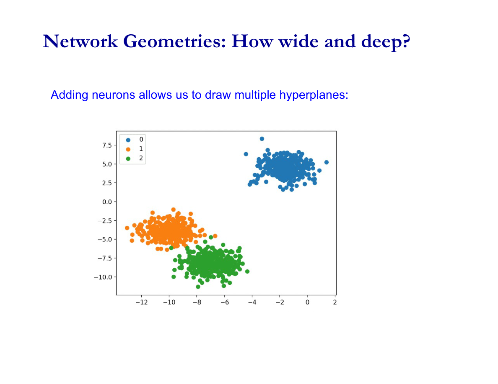
Lecture 18
Lecture 18: Transformer 入门 / Intro to Transformers
源文件：Lecture 18 -- Intro to Transformers.pdf。本文由原始 PDF 逐页提取生成，不读取 DOCX 笔记。
1. 本讲引入
前面的 sequence model 依赖 RNN 或 BRNN 按时间步传递 hidden state。它们能够处理可变长度文本，却也带来长距离信息衰减和串行计算瓶颈。Lecture 18 从 residual connection 开始，为更深网络建立短路径。随后，课件把 attention 描述为一种让模型动态关注输入 token 的机制。 Lecture 18, pp.2-7
attention weights 将不同位置的重要性表示为概率分布。模型不必把整段输入压缩成单一向量，而可以在需要时回看相关位置。可是，如果 attention 仍然依附于 BRNN，顺序计算限制并没有完全消失。Transformer 因此尝试去掉 recurrence，让 token 之间直接建立联系。 Lecture 18, pp.7-12 image-based content; check original slide
2. 问题背景
Transformer 首先要解决深层训练问题。课件用 residual connection 图示说明，输入可以绕过中间层再与输出相加。这个结构为 forward pass 提供替代路径，也让 backpropagation 更短。后续 encoder block 会反复使用这一机制。 Lecture 18, pp.3-6
课件第 7 页直接定义 attention：模型关注前后文中特定词的能力。attention weights 以概率分布表示哪些 token 更重要。第 8 至 11 页继续将 attention 与 BRNN、translation activation matrix 和 vanishing gradient 联系起来。这里是从循环模型转向 Transformer 的关键过渡。 Lecture 18, pp.7-11 image-based content; check original slide
去掉 recurrence 后，模型失去天然顺序。课件因此引入 positional encoding，并比较简单 index、sinusoidal encoding 和 learned positional embedding。顺序信息与 word embedding 相加后进入网络。Transformer 由此同时获得并行性和位置感知。 Lecture 18, pp.12-16
最后，课件逐层搭建 encoder：embedding、positional encoding、multi-head self-attention、feed-forward network、layer normalization 和 residual connection。self-attention 让同一序列内部 token 直接建模依赖。多头结构允许模型并行学习不同关系。现代 LLM、搜索排序和多模态模型都建立在这条路线之上。 Lecture 18, pp.17-23
3. 逐步叙事笔记
课件先引入 residual connection：跳过部分层可以为 forward pass 和 backpropagation 提供更短路径。 Lecture 18, pp.2-6
随后课件将 attention 描述为模型关注输入序列中特定 token 的能力。attention weights 表示不同位置的重要性分布；与 BRNN 结合后仍受到顺序计算和梯度问题影响。 Lecture 18, pp.7-11 image-based content; check original slide
辅助类比，不是课件原文
类比：attention 像在群聊里抓重点
模型不是把每句话都同等相信，而是根据当前问题判断哪些 token 更相关。就像群聊里十个人同时发言，真正回答问题的可能只有两三句。attention weights 就是在给这些发言分配权重。
Transformer 回到固定长度序列，但 attention 本身不携带顺序信息，因此需要 positional encoding。课件比较 sinusoidal 与 learned positional embedding。 Lecture 18, pp.12-16
最后，encoder 将 embedding、positional encoding、multi-head self-attention、feed-forward network、normalization 和 residual connection 逐层组合起来。 Lecture 18, pp.17-23
课件例子Lecture 18, p.21
例子：scaled dot-product attention 如何得到 attention weights
课件给出 Transformer 中 self-attention 的核心机制。Query 与 Key 的相似度经过缩放和 softmax 变成 attention weights，再对 Value 加权求和。这个例子说明模型不是平均看所有 token，而是为每个位置动态分配关注比例。
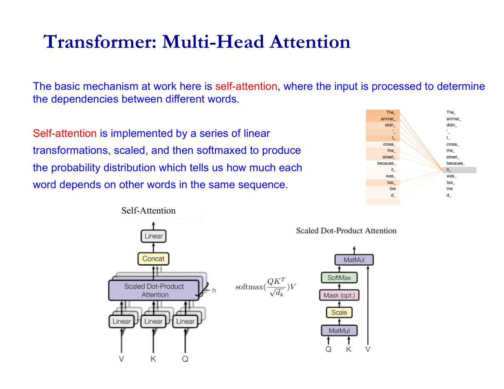
Thecatsatonmat
Python example: attention weights
import numpy as np
scores = np.array([0.1, 2.0, 0.3])
weights = np.exp(scores) / np.exp(scores).sum()
print(np.round(weights, 3))解释： softmax 把 attention scores 转成非负且和为 1 的 attention weights；分数越高的 token 获得越多关注。
4. 核心模型 / 算法
本讲的核心机制应结合逐步叙事和原始 slide 阅读。重点术语已用蓝色高亮；鼠标悬浮或键盘聚焦可查看中文解释。 Lecture 18, pp.2-23
5. 数学公式与模型机制
\[\operatorname{Attention}(Q,K,V)=\operatorname{softmax}\left(\frac{QK^\top}{\sqrt{d_k}}\right)V\]
scaled dot-product self-attention。 Lecture 18, p.21
\[y=F(x)+x\]
residual connection 为深层网络提供短路径。 Lecture 18, p.3
6. 现实应用
LLM、代码助手、搜索排序、视觉语言模型和语音模型。 Lecture 18, pp.17-23
7. 本讲解决的问题与遗留问题
解决了什么
最后，encoder 将 embedding、positional encoding、multi-head self-attention、feed-forward network、normalization 和 residual connection 逐层组合起来。
仍需注意
方法效果取决于数据、任务、评价指标和计算成本，需要结合后续 lecture 继续完善。
继续阅读
原图代表页：p.7, p.15, p.21。建议先核对结构图和公式页，再进入下一讲。
8. 复习重点
- 按“问题 - 方法 - 局限 - 改进”复述本讲。
- 能够解释蓝色术语，并定位对应 slide。
- 结合原始课件图像检查结构图、表格和公式。
9. 术语表
| attention weights | attention weights 是模型分配给不同输入位置的权重，通常形成概率分布，用于表示当前输出更依赖哪些 token。 |
|---|---|
| self-attention | self-attention 是 Transformer 的核心机制，使同一序列中的 token 可以相互计算相关性。 |
| embedding | embedding 将离散对象映射为连续向量，使相似对象在空间中更接近。 |
| Transformer | Transformer 以 self-attention 为核心，支持序列位置之间直接建立依赖。 |
| attention | attention 让模型在处理当前 token 时动态关注输入序列中的不同位置。 |
| RNN | RNN 通过循环连接处理 sequence data，并在 hidden state 中保存历史信息。 |
| backpropagation | backpropagation 根据 loss 反向计算各参数的梯度。 |
| residual connection | residual connection 让信息绕过部分层，并与后续输出聚合。 |
| normalization | normalization 在文本处理中统一表面形式，在网络中也可用于稳定数值尺度。 |
10. 原始课件页面展示
以下页面由原始 PDF 渲染。点击图片可放大查看。
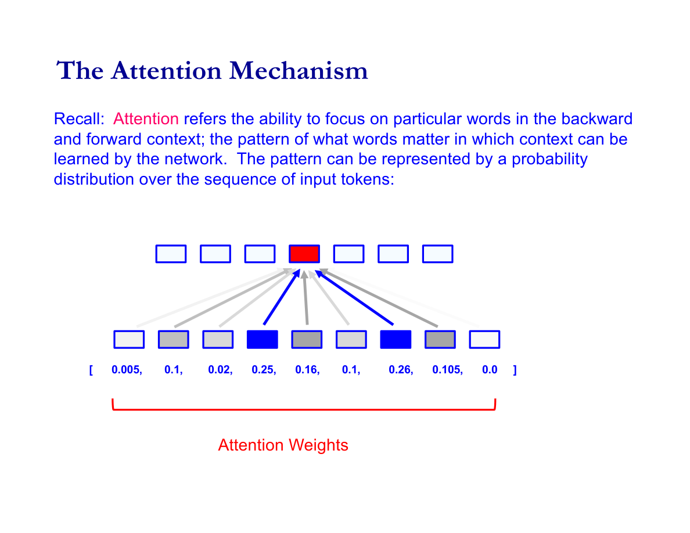
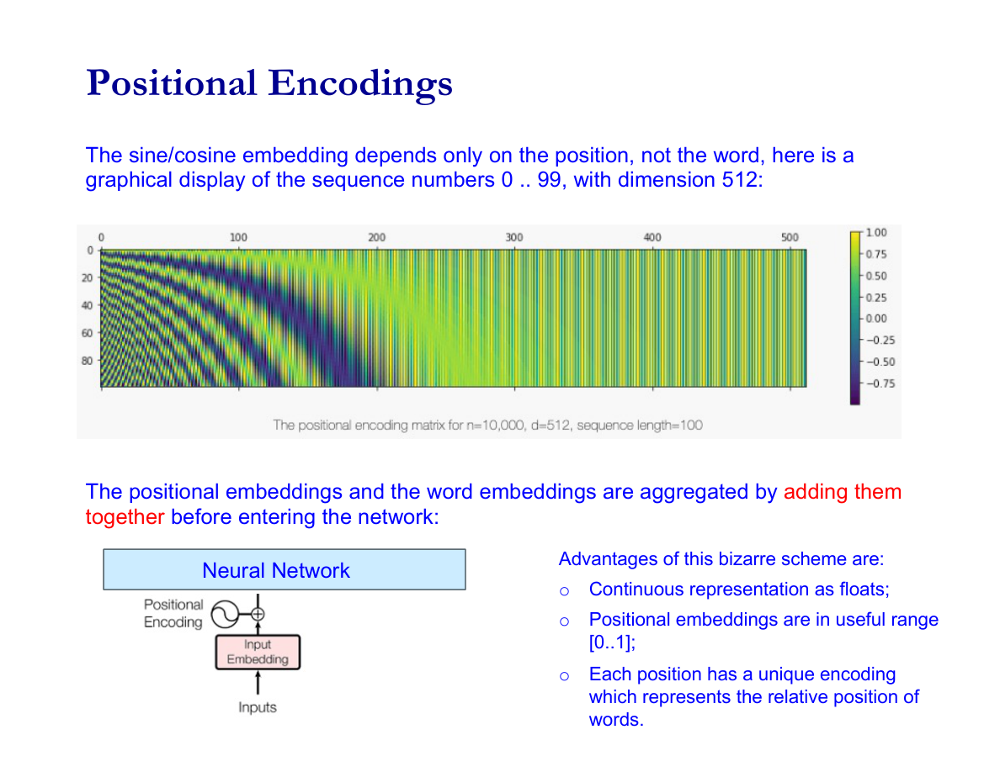
Lecture 19
Lecture 19: Transformer 解码器、采样与 BERT / Sampling and BERT
源文件：Lecture 19 -- Intro to Transformers and BERT.pdf。本文由原始 PDF 逐页提取生成，不读取 DOCX 笔记。
1. 本讲引入
Lecture 18 已经搭建 Transformer encoder，但生成系统仍然需要决定每一步输出什么。Lecture 19 先回到 sampling strategy，比较 temperature、top-k 和 top-p。模型结构决定它能表示什么，decoding strategy 则影响用户最终看到什么。生成质量由两者共同决定。 Lecture 19, pp.2-7
随后课件补全 Transformer decoder，并引入 transfer learning。decoder 使用 masked multi-head attention 模拟从左到右生成。pretraining 先在大规模文本中积累通用知识，fine-tuning 再把能力迁移到具体任务。NLP 模型开发开始从“每个任务从头训练”转向“复用基础模型”。 Lecture 19, pp.8-19
2. 问题背景
生成模型输出的是概率分布，不是唯一答案。temperature 改变分布尖锐程度，top-k 保留概率最高的若干候选，top-p 根据累计概率动态选择集合。课件的分布图帮助学生理解不同策略如何改变随机性。chatbot 和文本生成系统会直接受到这些参数影响。 Lecture 19, pp.3-7
Transformer decoder 与 encoder 相似，但多了 masked attention。mask 阻止当前位置提前查看未来 token，从而保持 autoregressive generation 的因果顺序。课件用 decoder 图示说明信息流。这个设计会成为 GPT 路线的基础。 Lecture 19, pp.8-13
transfer learning 进一步改变训练成本。BERT 不再只做 left-to-right prediction，而是使用 bidirectional context、masked language modeling 和 next sentence prediction。被遮盖 token 迫使模型从左右文恢复信息。classification、sequence labeling 和关系判断都可以在预训练表示上继续构建。 Lecture 19, pp.14-31 image-based content; check original slide
3. 逐步叙事笔记
生成模型的概率分布还需要 decoding 策略。课件比较 temperature、top-k 与 top-p sampling。 Lecture 19, pp.2-7
Transformer decoder 在 encoder 基础上加入 masked multi-head attention，模拟从左到右生成。 Lecture 19, pp.8-13
transfer learning 改变了训练范式：先在海量数据上 pretraining，再通过 feature-based 方法或 fine-tuning 迁移知识。 Lecture 19, pp.14-19
BERT 使用 bidirectional context，并通过 masked language modeling 与 next sentence prediction 学习通用表示。 Lecture 19, pp.20-31 image-based content; check original slide
课件例子Lecture 19, p.24
例子：masked language modeling 像上下文填空
课件在 BERT 部分强调 bidirectional context。masked language modeling 把句子中的某个 token 遮住，让模型同时利用左侧和右侧上下文恢复它。这个例子解释了 BERT 为什么更适合理解型任务，而不是单纯 left-to-right generation。
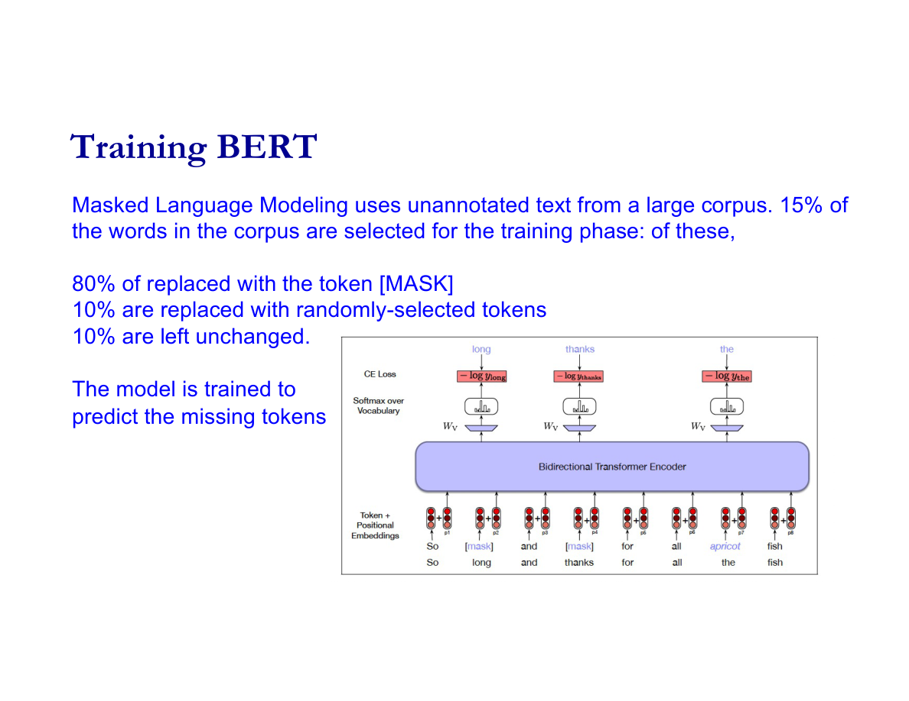
| left context | masked token | right context | 模型目标 |
|---|---|---|---|
| The cat sat on the | [MASK] | . | 预测 mat / chair 等合理 token |
| NLP models use | [MASK] | to learn language | 预测 context / data 等词 |
辅助类比，不是课件原文
类比：BERT 像做完形填空
它不是只看题目前半句，而是把前后文都读完再填空。这个能力让 BERT 在 sentence classification、QA 和 relation extraction 中更擅长理解上下文。
4. 核心模型 / 算法
本讲的核心机制应结合逐步叙事和原始 slide 阅读。重点术语已用蓝色高亮；鼠标悬浮或键盘聚焦可查看中文解释。 Lecture 19, pp.2-31
5. 数学公式与模型机制
本讲以概念或流程图为主。若原 PDF 中的图示包含公式，需要结合原图人工检查。
6. 现实应用
生成采样、预训练迁移和 BERT 表示学习。 Lecture 19, pp.20-31
7. 本讲解决的问题与遗留问题
解决了什么
BERT 使用 bidirectional context，并通过 masked language modeling 与 next sentence prediction 学习通用表示。
仍需注意
方法效果取决于数据、任务、评价指标和计算成本，需要结合后续 lecture 继续完善。
继续阅读
原图代表页：p.6, p.12, p.24。建议先核对结构图和公式页，再进入下一讲。
8. 复习重点
- 按“问题 - 方法 - 局限 - 改进”复述本讲。
- 能够解释蓝色术语，并定位对应 slide。
- 结合原始课件图像检查结构图、表格和公式。
9. 术语表
| language model | language model 为 token 序列分配概率，并可预测下一个 token。 |
|---|---|
| fine-tuning | fine-tuning 在预训练模型基础上使用任务数据继续训练。 |
| pretraining | pretraining 先在大规模通用数据上训练模型，再适配下游任务。 |
| Transformer | Transformer 以 self-attention 为核心，支持序列位置之间直接建立依赖。 |
| attention | attention 让模型在处理当前 token 时动态关注输入序列中的不同位置。 |
| BERT | BERT 是基于 Transformer encoder 的双向预训练语言表示模型。 |
10. 原始课件页面展示
以下页面由原始 PDF 渲染。点击图片可放大查看。
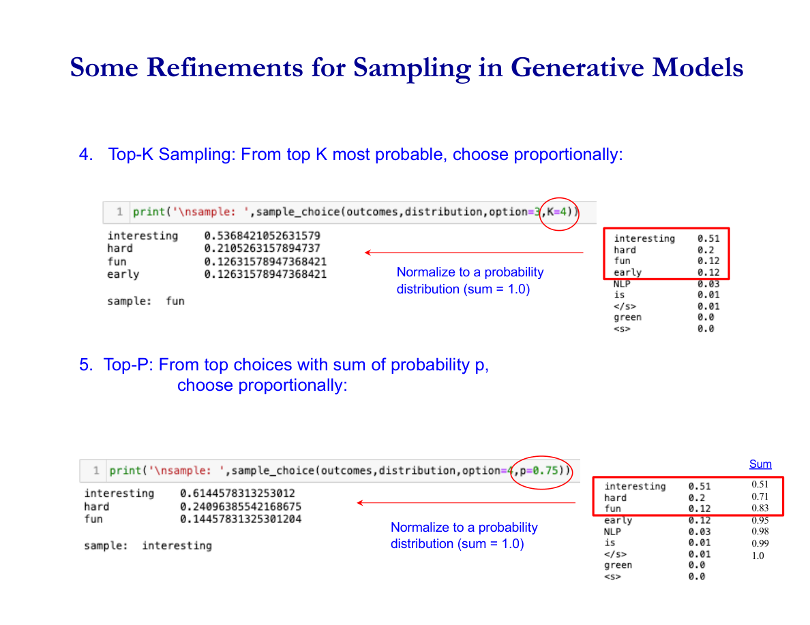
Lecture 20
Lecture 20: BERT 与 NLP 任务 / BERT and Friends
源文件：Lecture 20 -- Bert and Friends NLP Tasks.pdf。本文由原始 PDF 逐页提取生成，不读取 DOCX 笔记。
1. 本讲引入
Lecture 19 已经说明 pretraining 可以复用语言知识。Lecture 20 开始处理迁移过程本身：fine-tuning 时究竟应该更新多少参数。完全冻结模型可能限制适配能力，完全重训又可能造成 catastrophic forgetting。LoRA 等方法尝试以较低成本调整模型。 Lecture 20, pp.2-6
课件随后回到 Transformer family 和 BERT 训练任务。BERT、DistilBERT、masked language modeling 和 next sentence prediction 共同说明，预训练模型并不是单一规格。模型大小、训练目标和适配方式都会影响部署选择。课程进入“模型家族”视角。 Lecture 20, pp.7-15
2. 问题背景
fine-tuning 的核心矛盾是稳定与可塑性。参数更新过少，模型难以学习新领域；参数更新过多，已有能力可能被覆盖。课件通过 freeze、full retraining 和 LoRA 的对比说明适配策略。现实项目还必须考虑显存、延迟和维护成本。 Lecture 20, pp.3-6
BERT 的 bidirectional context 适合理解型任务。masked language modeling 让模型根据左右文恢复缺失 token，next sentence prediction 则尝试建模句间关系。DistilBERT 使用 knowledge distillation 缩小模型。课件借这些变体说明模型能力和部署成本之间的权衡。 Lecture 20, pp.7-15
后半部分把 BERT 连接到 sentence classification、sequence labeling、QA、knowledge graph 和 summarization。共享 encoder 可以接不同 task head，不必为每个任务重新学习语言基础。企业文本系统通常正是这样组合预训练模型和业务标签。下一讲将转向 GPT 与 T5 的生成路线。 Lecture 20, pp.16-33 image-based content; check original slide
3. 逐步叙事笔记
本讲先问 fine-tuning 时哪些参数应该更新。完全重训可能造成 catastrophic forgetting，LoRA 等方法尝试降低适配成本。 Lecture 20, pp.2-6
课件回顾 Transformer 家族、BERT、DistilBERT、masked language modeling 和 next sentence prediction。 Lecture 20, pp.7-15
BERT 的输出可以接入 sentence classification、关系判断、sequence labeling、QA 等任务，展示通用表示如何服务下游系统。 Lecture 20, pp.16-33 image-based content; check original slide
课件例子Lecture 20, p.19
例子：同一个 BERT encoder 接不同任务头
课件把 BERT 连接到 sentence classification、sequence labeling、QA 和 relation extraction。共享 encoder 负责产生 contextual embedding，不同 task head 负责输出不同形式的答案。这个例子说明 fine-tuning 的核心价值：复用语言表示，只为任务做少量适配。
| 任务 | 输入 | 输出形式 |
|---|---|---|
| sentence classification | 一句或两句文本 | 类别 label |
| sequence labeling | token sequence | 每个 token 的标签 |
| QA | question + passage | answer span |
4. 核心模型 / 算法
本讲的核心机制应结合逐步叙事和原始 slide 阅读。重点术语已用蓝色高亮；鼠标悬浮或键盘聚焦可查看中文解释。 Lecture 20, pp.2-33
5. 数学公式与模型机制
本讲以概念或流程图为主。若原 PDF 中的图示包含公式，需要结合原图人工检查。
6. 现实应用
classification、NER、QA、relation extraction 和低成本适配。 Lecture 20, pp.16-33
7. 本讲解决的问题与遗留问题
解决了什么
BERT 的输出可以接入 sentence classification、关系判断、sequence labeling、QA 等任务，展示通用表示如何服务下游系统。
仍需注意
方法效果取决于数据、任务、评价指标和计算成本，需要结合后续 lecture 继续完善。
继续阅读
原图代表页：p.7, p.13, p.19。建议先核对结构图和公式页，再进入下一讲。
8. 复习重点
- 按“问题 - 方法 - 局限 - 改进”复述本讲。
- 能够解释蓝色术语，并定位对应 slide。
- 结合原始课件图像检查结构图、表格和公式。
9. 术语表
| language model | language model 为 token 序列分配概率，并可预测下一个 token。 |
|---|---|
| fine-tuning | fine-tuning 在预训练模型基础上使用任务数据继续训练。 |
| Transformer | Transformer 以 self-attention 为核心，支持序列位置之间直接建立依赖。 |
| BERT | BERT 是基于 Transformer encoder 的双向预训练语言表示模型。 |
| classification | classification 将输入分配到预定义类别，例如 spam detection 或 sentiment analysis。 |
| LoRA | LoRA 通过低秩参数更新降低大模型适配成本。 |
10. 原始课件页面展示
以下页面由原始 PDF 渲染。点击图片可放大查看。
Lecture 21
Lecture 21: GPT、T5 与 Transformer 家族 / GPT and T5
源文件：Lecture 21 -- GPT and T5.pdf。本文由原始 PDF 逐页提取生成，不读取 DOCX 笔记。
1. 本讲引入
前两讲围绕 BERT 展开理解型任务。Lecture 21 把视角转到 Transformer family 的 decoder 一侧。GPT 使用 generative pretraining 和 autoregressive language model 持续预测下一个 token。模型不只提取表示，也开始直接承担开放式生成。 Lecture 21, pp.2-6 image-based content; check original slide
课件沿 GPT-2、GPT-3 和 scaling law 讲述能力扩张。随着参数、数据和算力增加，模型出现训练目标之外的 emergent properties。随后，T5 保留 encoder-decoder 结构，并把多种任务统一为 text-to-text。课程开始接近现代大模型接口。 Lecture 21, pp.7-18 image-based content; check original slide
2. 问题背景
GPT 的核心任务形式看似简单：根据已有 token 预测下一个 token。但当模型规模和 corpus 扩大后，它可以完成摘要、续写、问答和风格模仿。课件用 GPT-2 示例提醒学生，流畅文本也可能包含虚构事实。生成能力和可靠性不是同一个指标。 Lecture 21, pp.6-12
scaling law 描述 test loss 与参数、数据和计算资源之间的平滑关系。GPT-3 进一步扩大层数、attention head 和上下文窗口。T5 则用 text-to-text framework 统一任务输入输出。不同架构路线都在探索通用模型怎样复用能力。 Lecture 21, pp.13-17
课件最后回到现实 NLP 任务：classification、retrieval、generation、summarization、QA 和 reasoning。大模型可以统一接口，却也带来幻觉、推理成本和治理压力。任务接口的统一并不意味着评估问题消失，反而需要针对事实性、鲁棒性和成本重新设计检查方式。下一讲继续讨论 GPT 结论，并把表示学习扩展到 audio processing。 Lecture 21, pp.18-29 image-based content; check original slide
3. 逐步叙事笔记
课件先定位 Transformer 家族：BERT 偏向理解，GPT 位于 decoder 路线，强调 autoregressive generation。 Lecture 21, pp.2-6 image-based content; check original slide
GPT-2 和 GPT-3 随数据、参数和算力扩大出现 emergent properties。power-law scaling 描述性能与规模之间的平滑关系。 Lecture 21, pp.7-15
T5 则保留 encoder-decoder，并将任务统一成 text-to-text 接口。 Lecture 21, pp.16-18 image-based content; check original slide
课件例子Lecture 21, p.18
例子：T5 把 NLP 任务统一成 text-to-text
课件将 GPT 与 T5 放在 Transformer family 中比较。GPT 走 autoregressive next-token prediction 路线，T5 保留 encoder-decoder，并把 classification、translation、summarization 等任务都写成输入文本到输出文本。这个例子说明 task format 的统一如何降低系统设计复杂度。
| 模型 | 核心结构 | 典型任务形式 |
|---|---|---|
| BERT | encoder | 理解 / classification |
| GPT | decoder | next-token generation |
| T5 | encoder-decoder | text-to-text |
最后，课件把这些模型连接回 classification、retrieval、generation、QA 和 reasoning 等现实任务。 Lecture 21, pp.19-29 image-based content; check original slide
4. 核心模型 / 算法
本讲的核心机制应结合逐步叙事和原始 slide 阅读。重点术语已用蓝色高亮；鼠标悬浮或键盘聚焦可查看中文解释。 Lecture 21, pp.2-29
5. 数学公式与模型机制
本讲以概念或流程图为主。若原 PDF 中的图示包含公式，需要结合原图人工检查。
6. 现实应用
对话、写作、代码生成、agent 和 text-to-text 服务。 Lecture 21, pp.19-29
7. 本讲解决的问题与遗留问题
解决了什么
最后，课件把这些模型连接回 classification、retrieval、generation、QA 和 reasoning 等现实任务。
仍需注意
方法效果取决于数据、任务、评价指标和计算成本，需要结合后续 lecture 继续完善。
继续阅读
原图代表页：p.6, p.15, p.18。建议先核对结构图和公式页，再进入下一讲。
8. 复习重点
- 按“问题 - 方法 - 局限 - 改进”复述本讲。
- 能够解释蓝色术语，并定位对应 slide。
- 结合原始课件图像检查结构图、表格和公式。
9. 术语表
| encoder-decoder | encoder-decoder 将输入编码为中间表示，再由 decoder 逐步生成目标序列。 |
|---|---|
| Transformer | Transformer 以 self-attention 为核心，支持序列位置之间直接建立依赖。 |
| BERT | BERT 是基于 Transformer encoder 的双向预训练语言表示模型。 |
| GPT | GPT 是基于 Transformer decoder 的自回归生成模型。 |
| T5 | T5 将多种 NLP 任务统一表示为 text-to-text 问题。 |
| classification | classification 将输入分配到预定义类别，例如 spam detection 或 sentiment analysis。 |
10. 原始课件页面展示
以下页面由原始 PDF 渲染。点击图片可放大查看。
Lecture 22
Lecture 22: 音频处理与深度学习 / Audio Processing
源文件：Lecture 22 -- Audio Processing and Deep Learning.pdf。本文由原始 PDF 逐页提取生成，不读取 DOCX 笔记。
1. 本讲引入
Lecture 21 结束于 GPT 和 Transformer family。Lecture 22 先补充 Mixture of Experts（MoE）和 multimodal model，再把输入从文本扩展到声音。文本 token 是离散符号，audio processing 面对的却是连续 waveform。模型需要新的表示方式，才能进入语音任务。 Lecture 22, pp.2-7
课件从声音的物理基础讲起。振动产生空气压力波，amplitude、frequency、period 和 wavelength 描述波形属性。人耳感知的 pitch 和 loudness 又不完全等同于物理量。理解这些差异，是构造 acoustic feature 的前提。 Lecture 22, pp.8-15 image-based content; check original slide
2. 问题背景
数字音频不能直接保存无限连续信号，只能在离散时间点 sampling。采样率和振幅量化决定保留多少信息。单看 time domain waveform 可以观察幅度变化，却不容易识别复杂频率组成。语音识别需要更适合模型分析的 representation。 Lecture 22, pp.8-15 image-based content; check original slide
Fourier transform 提供了关键转换。复杂波形可以分解为不同 frequency、amplitude 和 phase 的正弦成分，也可以通过 inverse transform 重建。课件用 square wave 和 harmonic series 展示这种等价关系。time domain 与 frequency domain 是同一声音的两种视角。 Lecture 22, pp.16-21
spectrogram 再把频谱沿时间排列为二维结构。Mel scale 和 decibel scale 更贴近人类对 pitch 与 loudness 的感知。Log Mel Spectrogram 因此成为 speech model 的常见输入。下一讲的 ASR 将在这套特征上完成声音到文本的映射。 Lecture 22, pp.22-37
3. 逐步叙事笔记
课件先承接 GPT，介绍 Mixture of Experts 与多模态模型，再将视角转向 audio processing。 Lecture 22, pp.2-7
声音是压力波。amplitude、frequency、period、wavelength、intensity 和 loudness 描述其物理属性；数字音频还需要 sampling。 Lecture 22, pp.8-15 image-based content; check original slide
Fourier transform 让同一信号可以在 time domain 与 frequency domain 间转换。harmonic series 帮助理解复杂声音。 Lecture 22, pp.16-21
spectrogram 把频率随时间的变化变成二维表示；Mel scale 和 Log Mel Spectrogram 更接近人类听觉。 Lecture 22, pp.22-37
课件例子Lecture 22, p.30
例子：从 waveform 到 spectrogram
课件把声音从 time domain 转到 frequency domain，再进一步展示 spectrogram。waveform 直接记录振幅随时间变化，而 spectrogram 展示不同频率在不同时间的能量。这个例子说明 audio processing 为什么不能直接套用离散 token 的文本方法。
waveform→windowing→spectrogram→acoustic features→text
Python example: toy waveform
import numpy as np
sr = 16000
t = np.linspace(0, 0.01, int(sr * 0.01))
wave = np.sin(2 * np.pi * 440 * t)
print(np.round(wave[:5], 3))解释： 这段代码只生成一个 440Hz sine wave，用来说明 waveform 是随时间变化的连续数值序列；真实 spectrogram 还需要窗口化和频谱变换。
4. 核心模型 / 算法
本讲的核心机制应结合逐步叙事和原始 slide 阅读。重点术语已用蓝色高亮；鼠标悬浮或键盘聚焦可查看中文解释。 Lecture 22, pp.2-37
5. 数学公式与模型机制
\[y(t)=A\sin(2\pi ft+\phi)\]
正弦波由 amplitude、frequency 和 phase 描述。 Lecture 22, p.9
\[I=cA^2\]
声音 intensity 与 amplitude 的平方成正比。 Lecture 22, p.12
\[m=2595\log_{10}\left(1+\frac{f}{700}\right)\]
Mel scale 近似人类对 pitch 的非线性感知。 Lecture 22, p.33
6. 现实应用
语音识别、声音事件检测、音乐分类和说话人识别。 Lecture 22, pp.22-37
7. 本讲解决的问题与遗留问题
解决了什么
spectrogram 把频率随时间的变化变成二维表示；Mel scale 和 Log Mel Spectrogram 更接近人类听觉。
仍需注意
方法效果取决于数据、任务、评价指标和计算成本，需要结合后续 lecture 继续完善。
继续阅读
原图代表页：p.19, p.30, p.35。建议先核对结构图和公式页，再进入下一讲。
8. 复习重点
- 按“问题 - 方法 - 局限 - 改进”复述本讲。
- 能够解释蓝色术语，并定位对应 slide。
- 结合原始课件图像检查结构图、表格和公式。
9. 术语表
| GPT | GPT 是基于 Transformer decoder 的自回归生成模型。 |
|---|---|
| spectrogram | spectrogram 展示频谱随时间的变化，是常见音频特征表示。 |
| Log Mel Spectrogram | Log Mel Spectrogram 使用接近人类听觉的 Mel 和对数尺度表示音频。 |
| Mixture of Experts | Mixture of Experts 使用多个 expert 子网络，并由 gating network 选择或组合输出。 |
10. 原始课件页面展示
以下页面由原始 PDF 渲染。点击图片可放大查看。
Lecture 23
Lecture 23: 自动语音识别 / Automatic Speech Recognition
源文件：Lecture 23 -- ASR.pdf。本文由原始 PDF 逐页提取生成，不读取 DOCX 笔记。
1. 本讲引入
Lecture 22 已经把 waveform 转换为 Log Mel Spectrogram。Lecture 23 进一步追问：怎样从频谱图恢复文字。Automatic Speech Recognition（ASR）必须识别 phoneme、word 和 sentence structure，还要处理时间变化。课程由 audio representation 进入完整 speech-to-text 系统。 Lecture 23, pp.2-8
连续语音不是整齐排列的离散 token。说话人会改变语速、pitch、stress、accent 和停顿，背景噪声也会干扰特征。课件用连续语音和 prosody 说明，识别系统不能只做局部声音匹配。acoustic model 与 language model 必须协同工作。 Lecture 23, pp.9-15 image-based content; check original slide
2. 问题背景
vowel 可以通过 formant 识别，consonant 和 semi-vowel 则更依赖时间变化。课件比较 spectrum 与 spectrogram，说明单个瞬时切片不足以描述所有 phoneme。IPA 提供标准化语音单位，但实际声音仍然连续。ASR 必须把连续观测映射到离散符号。 Lecture 23, pp.2-8
连续语音还包含 prosodic feature。相同词序在不同 pitch contour 下可能表达陈述或疑问。现实录音中还有自我修正、口音和说话人差异。会议转录和语音助手必须在这些变化下保持稳定。 Lecture 23, pp.9-15 image-based content; check original slide
传统 ASR 使用 HMM 和 Viterbi decoding。音频先转为 feature sequence，再由 acoustic model 评估语音单位，最后结合 n-gram language model 输出更可能的文本。现代方法将任务改写为 sequence-to-sequence，并使用 RNN 或 Transformer。Whisper 是课件给出的代表案例。 Lecture 23, pp.17-24 image-based content; check original slide
3. 逐步叙事笔记
ASR 从 Log Mel Spectrogram 和 phoneme 开始。vowel 的 formant 与 consonant 的时间变化说明语音识别必须处理频谱结构。 Lecture 23, pp.2-8
连续语音还带有停顿、stress、pitch、accent 和说话人差异，因此识别不只是逐音素替换。 Lecture 23, pp.9-15 image-based content; check original slide
传统 ASR 使用 HMM：音频转为 feature sequence，Viterbi decoding 再结合 n-gram language model 输出文本。 Lecture 23, pp.16-21 image-based content; check original slide
课件例子Lecture 23, p.19
例子：ASR 把声学特征解码成文字
课件在传统 ASR 中把 audio feature sequence、acoustic model、Viterbi decoding 和 n-gram language model 连接起来。acoustic model 判断声音像哪些 phoneme 或声学状态，language model 判断哪些词序列更像自然语言。这个例子解释了为什么 ASR 不是简单把声音逐帧替换成字。
| 模块 | 输入 | 输出 | 作用 |
|---|---|---|---|
| acoustic model | spectrogram / features | phoneme likelihood | 听起来像什么 |
| language model | candidate words | sequence probability | 说法是否自然 |
| decoder | 两类分数 | best transcript | 综合选择文本 |
现代系统将 ASR 看作 sequence-to-sequence 任务，RNN 和 Transformer 成为主流，Whisper 是代表案例。 Lecture 23, pp.22-24
4. 核心模型 / 算法
本讲的核心机制应结合逐步叙事和原始 slide 阅读。重点术语已用蓝色高亮；鼠标悬浮或键盘聚焦可查看中文解释。 Lecture 23, pp.2-24
5. 数学公式与模型机制
\[\hat W=\arg\max_W P(W\mid X)\]
ASR 从声学观测中寻找最可能的文本序列。 Lecture 23, p.21
6. 现实应用
会议转录、字幕、语音助手、呼叫中心质检和无障碍工具。 Lecture 23, pp.22-24
7. 本讲解决的问题与遗留问题
解决了什么
现代系统将 ASR 看作 sequence-to-sequence 任务，RNN 和 Transformer 成为主流，Whisper 是代表案例。
仍需注意
方法效果取决于数据、任务、评价指标和计算成本，需要结合后续 lecture 继续完善。
继续阅读
原图代表页：p.6, p.19, p.23。建议先核对结构图和公式页，再进入下一讲。
8. 复习重点
- 按“问题 - 方法 - 局限 - 改进”复述本讲。
- 能够解释蓝色术语，并定位对应 slide。
- 结合原始课件图像检查结构图、表格和公式。
9. 术语表
| language model | language model 为 token 序列分配概率，并可预测下一个 token。 |
|---|---|
| Transformer | Transformer 以 self-attention 为核心，支持序列位置之间直接建立依赖。 |
| RNN | RNN 通过循环连接处理 sequence data，并在 hidden state 中保存历史信息。 |
| ASR | ASR 即 Automatic Speech Recognition，将语音信号转换为文本。 |
| spectrogram | spectrogram 展示频谱随时间的变化，是常见音频特征表示。 |
| Log Mel Spectrogram | Log Mel Spectrogram 使用接近人类听觉的 Mel 和对数尺度表示音频。 |
| phoneme | phoneme 是特定语言中能够区分意义的最小语音单位。 |
10. 原始课件页面展示
以下页面由原始 PDF 渲染。点击图片可放大查看。
Lecture 24
Lecture 24: NLP 的未来 / The Future of NLP
源文件：Lecture 24 -- Last Lecture.pdf。本文由原始 PDF 逐页提取生成，不读取 DOCX 笔记。
1. 本讲引入
前面的 lecture 已经从文本预处理走到 Transformer、GPT、audio processing 和 ASR。Lecture 24 不再引入单一算法，而是回顾整条技术路线。课件追问：当模型能力持续增长，下一阶段的进步会来自哪里。hardware、software、algorithm、数据质量和训练效率共同决定未来方向。 Lecture 24, pp.2-6 image-based content; check original slide
参数规模不会无限增长。课件预测，半结构化数据和计算周期都会遇到边际收益下降。与此同时，AI 风险不再只是科幻主题。系统能力、控制边界和社会影响必须进入技术讨论。 Lecture 24, pp.6-10 image-based content; check original slide
2. 问题背景
课程首先总结进展来源。更强硬件、更成熟软件和算法创新推动 NLP 快速变化，但模型规模只是其中一项。数据 curation、更高效训练和 specialized model 会越来越重要。这个判断连接了前面所有关于 corpus、pretraining 和 scaling 的讨论。 Lecture 24, pp.3-6 image-based content; check original slide
随后课件讨论 AI 风险。文本提取较少的图示页借科幻作品和引文提出控制问题：如果系统能力超过人类，谁来决定目标和边界。现实中的治理还包括偏见、隐私、版权和可靠性。技术评价必须同时观察能力与失败模式。 Lecture 24, pp.7-10 image-based content; check original slide
最后，课件回到 Turing Test、LaMDA、AGI 和 Chinese Room thought experiment。流畅对话是否等于理解，行为表现是否足以推断意识，这些问题仍没有简单答案。emergent properties 进一步提醒我们，复杂系统可能出现未明确设计的行为。课程以开放问题结束，而不是以单一结论结束。 Lecture 24, pp.11-17 image-based content; check original slide
3. 逐步叙事笔记
课程最后回顾 NLP 进展的驱动力：hardware、software、algorithm 和数据。模型规模不会无限扩张，效率和数据质量会更加重要。 Lecture 24, pp.2-6 image-based content; check original slide
能力提升也带来风险问题。课件讨论 superintelligence、控制边界和 AI 对知识生产方式的影响。 Lecture 24, pp.7-10 image-based content; check original slide
随后课程回到 Turing Test、LaMDA、AGI、Chinese Room 与 emergent properties，提醒我们区分表现、理解和意识。 Lecture 24, pp.11-17 image-based content; check original slide
课件例子Lecture 24, p.11
例子：Turing Test、Chinese Room 与 AGI 的边界
课件最后回到 Turing Test、LaMDA、AGI、Chinese Room 和 emergent properties。这个例子提醒学生区分 observable behavior、language fluency 和 genuine understanding。模型表现得像会对话，并不自动解决可靠性、治理和解释性问题。
| 概念 | 关注点 | 课程中的提醒 |
|---|---|---|
| Turing Test | 外显对话行为 | 行为像智能不等于解释机制 |
| Chinese Room | 符号操作与理解 | 流畅输出不必然等于理解 |
| AGI | 通用能力 | 需要评估边界和风险 |
最后，课程把问题交给学习者：未来工作不仅是扩大模型，也包括评价、治理和新的研究方向。 Lecture 24, p.18
4. 核心模型 / 算法
本讲的核心机制应结合逐步叙事和原始 slide 阅读。重点术语已用蓝色高亮；鼠标悬浮或键盘聚焦可查看中文解释。 Lecture 24, pp.2-18
5. 数学公式与模型机制
本讲以概念或流程图为主。若原 PDF 中的图示包含公式，需要结合原图人工检查。
6. 现实应用
AI 治理、可靠性评估、风险控制和人类监督。 Lecture 24, p.18
7. 本讲解决的问题与遗留问题
解决了什么
最后，课程把问题交给学习者：未来工作不仅是扩大模型，也包括评价、治理和新的研究方向。
仍需注意
方法效果取决于数据、任务、评价指标和计算成本，需要结合后续 lecture 继续完善。
继续阅读
原图代表页：p.6, p.11, p.16。建议先核对结构图和公式页，再进入下一讲。
8. 复习重点
- 按“问题 - 方法 - 局限 - 改进”复述本讲。
- 能够解释蓝色术语，并定位对应 slide。
- 结合原始课件图像检查结构图、表格和公式。
9. 术语表
| supervised learning | supervised learning 使用带标签样本学习输入到目标输出之间的映射。 |
|---|---|
| Transformer | Transformer 以 self-attention 为核心，支持序列位置之间直接建立依赖。 |
10. 原始课件页面展示
以下页面由原始 PDF 渲染。点击图片可放大查看。
Exam Practice
备考题生成器 / Exam Practice Generator
根据当前 lecture、关键词检索结果或自定义内容生成选择题、概念题和简答题。无 API key 时自动使用本地模板模式。
LLM Settings / 可选
LLM API 模式为可选功能。浏览器端保存 API key 存在暴露风险。公开部署时请使用后端代理。
重复点击 Generate 会重新采样上下文，并尽量生成不同角度、不同术语和不同选项顺序的题目。
Appendix
未能处理的文件
无。所有符合命名规则的 Lecture PDF 均已成功逐页读取。